（１）経営の基本方針
当グループは、「優れた自主技術・製品の開発を通じて社会に貢献する」を企業理念として、顧客に対し、より高い価値をもたらす競争力のある製品・サービスを提供することで、一層の発展を遂げることをめざしています。当グループでは、グループ内の多様な経営資源を最大限に活用するとともに、キャッシュ・フロー創出力の強化やキャピタルアロケーションの最適化、さらにポートフォリオ改革の加速に取り組むことで、競争力を強化し、グローバル市場での持続的成長を実現します。こうした取組により、顧客、株主、従業員を含むステークホルダーの期待に応え、企業価値の向上を図っていくことを基本方針としています。
（２）経営環境及び対処すべき課題
①当グループの経営環境及び対処すべき課題
現在の世界は、将来の予測が立てにくい時代です。国家間及び地域の紛争や緊張の高まり、気候変動や資源不足、高齢化による人口構造の変化、都市化の問題など様々な変化が生じています。一方で、複雑化する社会課題を解決するためのイノベーションが世界中で起きています。
かかる経営環境において、当グループは、経営計画「Inspire 2027」の下、デジタルを軸とした企業への変革を進め、持続的な成長を実現するとともに、環境・人々の幸福・経済成長が調和する「ハーモナイズドソサエティ」の実現に貢献することをめざしています。
激変する経営環境においても、変化に柔軟かつ迅速に対応し、グループ一体で日立ならではの価値を創出する「真のOne Hitachi」で、企業価値のさらなる向上に取り組んでいきます。
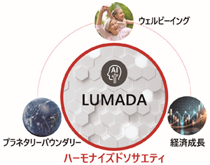
（イ）急拡大するAI市場の追い風を捉え、成長を加速
近年、製造やインフラの現場で労働力不足への対応や安全性・生産性の向上が求められており、物理空間での現場業務を革新するフィジカルAI（注）の領域に期待が集まり、今後さらなる市場拡大が見込まれています。こうした中、当グループは、社会インフラの現場に対するプロダクトやITシステムの導入実績により得られたデジタライズドアセットからデータを収集して、AIとドメインナレッジで分析し、デジタルサービスとして提供することで、更なる価値創出のサイクルを回すLumada 3.0を展開していきます。
Lumada事業の中核を成すソリューションとして、HMAXの展開を加速しています。2024年に鉄道事業者向けに生まれたHMAXは、現在、エネルギー・製造・ビルメンテナンスなど、幅広い業界への広がりを見せています。
今後も、フィジカルAIや自律的に判断・実行するAIであるエージェンティックAIといったAI市場の急拡大を追い風とし、Lumadaの成長エンジンであるHMAXの事業規模を拡大することで、全社の成長を加速し、収益性を強化していきます。
（注）現実世界のデータをAIが自律的に解析・判断し、その結果を設備や機器の制御等の具体的な行動につなげるAI技術
（ロ）グローバル自律分散型経営を通じ、各地域の事業機会を成長に繋げる
不確実な事業環境下においても、地域ごとに自律的に事業機会を探索することができるグローバル自律分散経営を実践することで、全社の成長を実現します。
|
具体的には、グローバルの６極（米州、EMEA、APAC、インド、日本、中国）において、地域ごとの成長分野を見極め、地域特性に応じた事業拡大を推進します。英国においては、日立エナジー社が同国最長となるHVDC連系線向け変換所の提供元に選定されたのをはじめ、地域固有の事業機会を確実に捉え、成長を実現していきます。 |
|
|
Eastern Green Link3 プロジェクトへ参画、HVDCの更なる拡大 |
|
|
（ハ）サステナブル経営の深化 激変する経営環境への対応 グローバル自律分散型経営は、リスクの抑制にも有効であり、ERM（注）の高度化を通じてアジリティの高い経営を推進しています。工場の新設や拡張による現地調達率の向上や調達ルートの多様化により事業のレジリエンス強化を図るとともに、サプライチェーンの強靭化を継続します。すでに、米国相互関税の影響抑制に向け、適切な価格転嫁等の対策を講じています。 （注）Enterprise Risk Management：事業環境の変化に伴うリスクと機会を全社的に把握し、経営戦略や意思決定に反映する仕組み |
|
|
|
|
|
Hitachi Rail社ヘイガースタウン工場（米国メリーランド州） |
長期的な企業価値向上を支える人的資本の強化
Inspire 2027に掲げる人財戦略の実行に向け、持続的成長をけん引する次世代リーダーの育成やAIプロフェッショナル人財の拡充に取り組んでいます。また、従業員の企業価値向上への意識を引き出すため、従業員への株式報酬制度の導入を決定しました。役員向け株式報酬制度と合わせ、当グループ全体で株主との価値共有を通じた長期的な企業価値向上をめざします。
（ニ）今後の成長に向けた取組
AIによる社内改革とカスタマーゼロ（注）として取り組むAI活用
従業員がAIを活用できる環境の整備を推進し、設計開発・品質保守・間接業務など幅広い領域において業務効率化に取り組んでいます。特に、システム開発においては、AIの活用によりシステムインテグレーション工程において生産性が向上するなど、社内業務改革を着実に進展させています。
幅広い事業領域を持つ当グループにおいて、AIによる社内業務改革を通じてナレッジやノウハウを体系化することは、カスタマーゼロとして大きな強みになります。社内での実績を、顧客のAIエージェントの導入効果を最大化するサービスや、フロントラインワーカーを支援するソリューションなどのサービスとして社外へ展開していきます。
（注）自社を最初の顧客（カスタマーゼロ）と捉え、デジタル技術やAIを活用した変革を先行して実践する
取組
次の成長をけん引する新事業・新技術の開発
戦略SIBビジネスユニットでは、「真のOne Hitachi」の強みが活かされ、次の成長をけん引するテーマを設定し、パートナーとの協創や資本提携を通じた事業創生の取組を加速しています。また、社会課題の解決に貢献する革新的な新技術の研究開発にも継続して取り組んでいます。
|
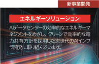 |
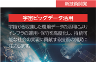 |
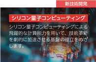 |
日立は、激変する経営環境においても、これらの取組を通じて成長を加速するとともに、キャピタルアロケーションの方針に則った投資をはじめ規律ある経営を推進することで、さらなる企業価値向上と株主への安定的な還元に取り組んでいきます。
②注力分野における経営環境及び対処すべき課題
注力分野であるデジタルシステム＆サービス、エナジー、モビリティ及びコネクティブインダストリーズの４セクターにおける経営環境及び対処すべき課題は、以下のとおりです。
デジタルシステム＆サービス
グローバル経済環境の不透明さが継続するものの、AIの急速な進化に伴い、企業のビジネス効率化や競争力向上に向けたAI導入の本格化によりAI関連需要が急速に拡大し、グローバルDX（デジタルトランスフォーメーション）市場を中心とした成長が進んでいます。加えて国内では、労働力不足が懸念される一方で、ITシステムのモダナイゼーションやDXの旺盛な需要が継続して生まれています。
デジタルシステム＆サービスセクターは、このような市場環境において、先進デジタル技術を活用したAIやクラウド、セキュリティ等の高度なデジタルソリューションを提供し、お客さまや社会の課題解決に取り組んでいます。また、他セクターとの連携のもと、デジタルシステム＆サービスセクターが持つAI及びデジタルに関する知見と技術力を結集し、他セクターのインストールベースのデジタル化及びサービス化を強力に推進しています。さらに、急速に進化するAIを当グループの成長エンジンと位置づけ、業務の生産性を飛躍的に向上させるとともに、新たな事業機会を創出するAIトランスフォーメーションを推進していきます。これにより、AIで社会インフラを革新する次世代ソリューション群「HMAX」をお客さまのアセットへ広くスケールさせ、Lumada事業の展開を加速していくとともに、高付加価値なLumada事業の比率を当グループ全体で高めていきます。
また、国内IT市場においては、AIを活用したシステムインテグレーション(SI)の生産性向上を図るとともに、GlobalLogic社等、海外グループ各社の最先端ナレッジを持つデジタル人財の活用を進めています。こうした取組により、国内において深刻な課題となっているデジタル人財の不足を補いつつ、引き続き高い需要がある大規模なミッションクリティカルSIのニーズに対応していきます。さらに、グローバルパートナーとの積極的な協業強化により、革新的なソリューション創出に注力するとともに、高度なAIスキルを持つ人財育成にも取り組んでいきます。
エナジー
気候変動や地政学リスクの高まりを背景に、脱炭素社会に向けた動きが加速し、世界的に低炭素エネルギーへの転換が進んでいます。また、デジタル化やAIの進展に伴うデータセンターの増加等により、今後も電力需要の増加が見込まれており、電力の安定供給能力の強化に対するニーズが高まっています。具体的には、クリーンエネルギーの導入拡大やそれに対応する電力網の整備、電源構成の多様化・分散化によるマイクログリッドの拡大、原子力を含む安定電源の再評価が進んでいます。
エナジーセクターでは、Lumadaを活用したデジタライズドアセットとデジタルサービスの提供を加速させ、グローバルトップレベルの製品群とインテグレーション力を通じて、地球環境と社会・経済の持続的な発展が調和するハーモナイズドソサエティの実現に貢献していきます。
パワーグリッドでは、日立エナジー社が世界中に持つインストールベースの価値と当グループのデジタル技術を組み合わせ、「HMAX Energy」の展開を通じたサービスの高度化及び継続的な価値提供の拡大により収益性の向上を加速させることで、世界トップクラスのサービス企業への変革を推進します。また、原子力発電システムにおいては、パートナーであるGE Vernovaと連携しながら、カナダにおける小型モジュール炉（SMR）初号機の建設開始を契機として、日米における投資拡大の動きも踏まえ、北米やポーランドをはじめとする欧州等へのSMR事業の展開を進めていきます。
モビリティ
モビリティ分野、とりわけ鉄道事業を取り巻く経営環境は、脱炭素社会の実現に向けた世界的な動きや都市化、デジタル技術の高度化が進んでいます。鉄道は環境負荷の少ない大量輸送手段として再評価され、先進国のみならず新興国においてもインフラ投資が拡大しています。一方で、インフラの老朽化や保守人財不足、安全性・信頼性への要求高度化など、課題も複雑化しています。
当グループは、フィジカル、デジタル、AIを融合した鉄道ソリューションを基本戦略とし、2024年に買収したThales S.A.（以下、「Thales社」といいます。）の鉄道信号関連事業とのインテグレーションを通じ、車両から信号・制御、デジタルサービスまでを含む事業ポートフォリオを拡充しています。さらに、AIを活用した「HMAX Mobility」を中核に、デジタルアセットマネジメント事業を強化しています。
具体的には、2025年のOmnicomの買収によるデジタル監視技術の統合、国内での保守DX推進、北米・欧州での事業基盤強化を進めています。これらの取組を通じて、鉄道事業における付加価値の向上と競争力の強化を図り、持続可能なモビリティ社会への貢献と鉄道事業の持続的成長をめざします。
コネクティブインダストリーズ
産業界では、深刻な労働人口の減少・高齢化に加え、CAPEX（Capital Expenditure）投資の巨大化やOPEX（Operating Expense）変動の増大といった構造的課題に直面しています。また、AIによる自律化・省人化や、Time to Market（開発から市場投入までの期間）の短縮による投資の早期回収、そしてOPEXの低減・最適化を求めるニーズが急速に高まっています。
コネクティブインダストリーズセクターでは、インダストリー（計測・分析装置、ヘルスケア機器、産業・流通及び水・環境ソリューション）とファシリティ（ビルシステム、空調機器、産業機器）の各分野において、高い信頼性を有するプロダクトの豊富なインストールベースから創出されるデータに、現場の実運用を熟知したドメインナレッジ、及びフィジカルAIを掛け合わせた次世代ソリューション群「HMAX Industry」を展開し、お客さまのライフタイムバリューの最大化をめざします。
特に、AI関連投資の成長率が高く、当セクターの強いプロダクトとHMAXによって伸ばすことができる「ファシリティ」、「半導体製造」、「医療診断」、「医薬品製造」の４領域を注力事業領域と定めて、重点的に取り組んでいきます。例えば、ファシリティ領域においては、コネクテッド台数・率がグローバルトップクラスの昇降機を起点に、HMAXを用いて建物全体のエネルギー効率向上や運用の最適化を図ります。半導体製造、診断等の領域においては、グローバルNo.1のシェアを誇るCD-SEM（注）及び生化学免疫・分析装置を中心とした計測・分析技術を起点にHMAXを展開し、Time to Market短縮や生産性向上、ダウンタイム低減を図ります。
これらの成長を支える基盤として、高速・省電力エッジAI半導体などHMAX拡大に向けたフィジカルAIの研究開発を強化します。さらに、フィジカルAIを軸とした事業ポートフォリオ構築と次なるグローバルトッププロダクト創生を一層加速させていきます。
こうした成長戦略を加速するための事業体制として、2026年４月よりBU（ビジネスユニット）を「インダストリアルソリューションBU」、「インダストリアルプロダクツBU」及び「アーバンソリューション＆サービスBU」の３つに再編しました。経営のスピードをさらに上げ、事業間のシナジーを創出し、One HitachiでLumadaによる成長をグローバルに加速していきます。
（注）測長SEM（Critical Dimension-Scanning Electron Microscope）：半導体等のウェーハ上に形成された微細パターンの寸法計測用に専用化した走査型電子顕微鏡（SEM）の応用装置
（３）経営計画における経営指標
Inspire 2027においては、以下の指標を経営上の業績目標としています。
|
指 標 |
Inspire 2027 目標 |
選定した理由 |
|
売上収益年成長率 （2024-2027年度 CAGR）（注）１ |
７-９％ |
成長性を測る指標として選定 |
|
Adjusted EBITA率 （2027年度）（注）２ |
13-15％ |
収益性を測る指標として選定 |
|
キャッシュフローコンバージョン （2027年度）（注）３ |
90％超 |
キャッシュ創出力を測る指標として選定 |
|
投下資本利益率（ROIC） （2027年度）（注）４ |
12-13％ |
投資効率を測る指標として選定 |
（注）１．CAGR（Compound Annual Growth Rate）は、年平均成長率です。
２．Adjusted EBITA（Adjusted Earnings before interest, taxes and amortization）は、調整後営業利益（売上収益から、売上原価並びに販売費及び一般管理費の額を減算して算出した指標）に、企業結合により認識した無形資産等の償却費を足し戻して算出しています。Adjusted EBITA率は、Adjusted EBITAを売上収益の額で除して算出した指標です。
３．キャッシュフローコンバージョンは、コア・フリー・キャッシュ・フローを当期利益の額で除して算出した指標です。コア・フリー・キャッシュ・フローは、フリー・キャッシュ・フロー（営業活動に関するキャッシュ・フローと投資活動に関するキャッシュ・フローを合わせたもの）から、M&Aや資産売却他に係るキャッシュ・フローを除いた経常的なキャッシュ・フローです。
４．ROIC（Return on invested capital）は、「（税引後の調整後営業利益＋持分法損益）÷投下資本×100」により算出しています。なお、「税引後の調整後営業利益＝調整後営業利益×（１－税金負担率）」、「投下資本＝有利子負債＋資本の部合計」です。
また、当グループは、Inspire 2027において、経営の長期目標として、Lumada事業の売上収益比率80％、Adjusted EBITA率20％をめざす「Lumada 80-20」を設定しています。Lumada事業への投資強化と事業ポートフォリオ改革を実行し、Lumada事業の更なる拡大と収益性向上を推進していきます。
上記の経営目標のほか、サステナブル経営を深化させるために、以下の項目を、サステナビリティ戦略「PLEDGES」に基づく取組として推進することで、社会への価値提供と当グループの持続的成長を加速していきます。
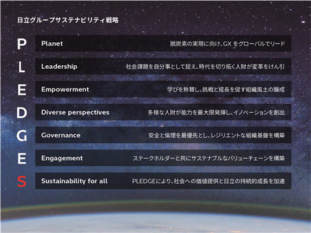
当グループは、地球を守ることと、一人ひとりが快適で活躍できる社会が両立する未来を実現するために、サステナビリティを事業戦略の中核に据えた「サステナブル経営」を実践しています。具体的には、社会課題の解決をめざした社会イノベーション事業を通じて、グローバルな社会・環境課題の解決に貢献し、サステナブルな社会の実現に向けた取組を推進しています。また、社会・環境の変化による事業へのリスク・機会を把握することで、事業継続の強靭性の向上や企業価値の向上に努めています。
当グループのサステナビリティに関する考え方及び具体的な取組は以下のとおりです。
（１）ガバナンス及びリスク管理
① 重要事項の機関決定
当社又は当グループに影響を及ぼす重要事項について、多面的な検討を経て慎重に決定するため、執行役社長の諮問機関として、「経営会議」を設置しています。経営会議では、以下の各戦略を含む重要な事項について審議・決定を行っています。
・成長戦略・グローバル（地域）戦略：当グループの成長に必要な各事業・地域の経営戦略に係る事項
・リスクマネジメント戦略：グループ・グローバルな各種リスクを一元的・横断的に把握し、成長戦略と連携して経営基盤を強化するために必要な事項
・人財戦略：当グループの成長の観点から、組織・文化の醸成及び人財の確保・育成等のために必要な事項
・その他、サステナビリティ戦略を含むグループ・グローバルに係る各種戦略
サステナビリティに関する重要事項については、経営会議に附議して議論・決定しており、必要に応じて取締役会にも附議しています。各種戦略をOne Hitachiで一体的に立案・実行することで、企業価値のさらなる向上と持続的な成長の実現を図っています。
② サステナブル経営のグループ全体への浸透
当グループは、Chief Sustainability Officerの指揮のもと、サステナビリティへの取組をグループ全体で推進しています。Chief Sustainability Officerが議長を務めるサステナビリティステアリングコミッティの四半期に１回の開催に加え、各ビジネスユニット（BU）及び主要グループ会社の事業推進部門長クラスや地域統括会社のサステナビリティ責任者をメンバーとするサステナビリティ推進会議を年に１～２回開催し、サステナビリティに関する重要施策の議論と情報共有を図っています。
また、環境、人財、安全衛生、品質・製品安全、サステナブル調達など、日立グループサステナビリティ戦略「PLEDGES」におけるテーマについては、各BU及び主要グループ会社の責任者をメンバーとする会議体を個別に設け、グループ横断での施策の検討や情報共有などを通じて当グループ全体のサステナビリティを推進しています。
③ サステナビリティ目標を役員報酬評価に反映
サステナビリティに関する定量的な目標を、役員報酬を決定する評価指標として設定しています。
中長期インセンティブ報酬及び短期インセンティブ報酬において、サステナビリティ戦略に沿った具体的指標・目標を設定し、それを評価に組み込むことでその実行を促しています。
当社の役員報酬制度については、「
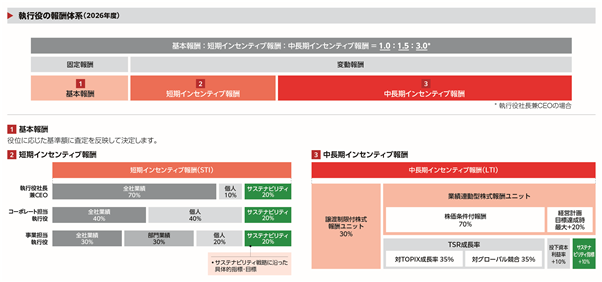
（２）重要課題に対する取組
日立は創業以来、「優れた自主技術・製品の開発を通じて社会に貢献する」ことを企業理念としており、社会インフラを支える技術・製品の開発によって社会が直面する課題を解決してきました。
経営計画「Inspire 2027」において日立がめざすのは、「環境、幸福、経済成長が調和するハーモナイズドソサエティの実現に貢献し、持続的に成長」することです。その実現に向けて、地球環境を守りながらグリーントランスフォーメーション(GX)を推進し、人的資本への積極投資により持続的成長をけん引する人財の強化を図ります。
①脱炭素・気候変動に関する取組（TCFDに基づく開示）
当社は、2018年６月に金融安定理事会（FSB）「気候関連財務情報開示タスクフォース（TCFD）」の提言に賛同を表明し、同年に公開した日立サステナビリティレポート2018より、TCFD提言に基づく情報開示をしています。
本有価証券報告書では、その抜粋を掲載します。
（イ）ガバナンス
当グループは、気候変動を含む環境課題への対応を重要な経営課題の一つと認識し、気候変動に関するガバナンスについても、前項の「
（ロ）戦略
日立にとって環境は、GXを通じた中長期的な価値創造を支える重要な基盤です。世界的な環境課題の深刻化への対応として、日立はグループ全体の方向性を示す環境ビジョンを定めています。このビジョンの実現に向けて、日立は「脱炭素」「サーキュラーエコノミー」「ネイチャーポジティブ」を軸とした環境長期目標「日立環境イノベーション2050」を掲げています。
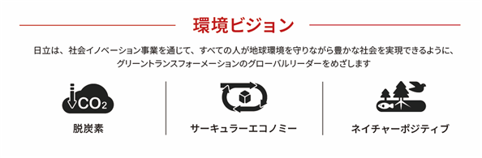
気候変動関連のリスク
気候変動に関するリスクについては、「脱炭素への移行リスク（主に1.5℃シナリオに至るリスク）」及び、「気候変動の物理的影響に関連したリスク（主に４℃シナリオに至るリスク）」に分類して分析・管理しています。
・脱炭素への移行リスク（主に1.5℃シナリオに至るリスク）
脱炭素への移行に関連する重大なリスクとは、一般的に「脱炭素化が実現した世界では、現状のままでは存続することができない事業」に関するリスクです。これは、化石燃料が使えなくなるリスクに該当しますが、現在の当グループの事業では、電気をエネルギー源とするものが多いため、重大なリスクはほとんど見つかりませんでした。
その他、当グループが想定する脱炭素への移行リスクとしては、炭素税、燃料・エネルギー費への課税、排出権取引などの導入に伴う事業コスト負担増や、脱炭素向け製品・サービスの技術開発の遅れによる販売機会の逸失などがあります。このなかで、製品開発の遅れのリスクについては、機会と表裏一体であり、脱炭素化に貢献する事業を進めることで、リスク回避が可能と判断しています。
・気候変動の物理的影響に関連したリスク（主に４℃シナリオに至るリスク）
気候変動に関する物理的リスクに関しては、気候変動の影響と考えられる気象災害、例えば台風や洪水、渇水などの激化（急性リスク）や、海面上昇、長期的な熱波など（慢性リスク）による事業継続のリスクが考えられます。
このようなリスクを回避するための一つの施策として、工場新設時には洪水被害を念頭に置いた上で立地条件や設備の配置などを考慮しています。
気候変動関連の機会
当グループでは、気候変動に関連する多くの機会が考えられます。
環境長期目標「日立環境イノベーション2050」に掲げたCO2排出量の削減目標を達成するには、事業所の脱炭素化はもちろん、バリューチェーン全体の排出の多くを占める、販売された製品・サービスの使用に伴うCO2排出の削減が重要です。省エネルギー化等による、CO2削減に貢献する製品・サービスの開発・提供は、顧客ニーズへの対応であり、社会の脱炭素化への貢献になります。また、顧客との協創によるカーボンフリーソリューションやサービスの普及のような脱炭素化に貢献するビジネスの拡大にも機会があります。GXへの取組は、当グループの経営戦略として推し進めている「社会イノベーション事業」の大きな柱であり、短・中・長期にわたる大きな事業機会になります。
当グループの気候変動関連のリスク及び機会について
気候変動関連のリスクを検討した結果、当グループの事業継続に重大で対応が困難なリスクは現時点では認識されていません。一方、気候変動対策への取組はビジネス機会となり得ることから、政策・市場動向等の変化を踏まえ、リスク及び機会の評価を継続的に実施していきます。
1.5℃及び４℃いずれのシナリオ下においても、市場の動向を注視し柔軟かつ戦略的に事業を展開することで、当グループは、中・長期観点から、脱炭素への移行において高いレジリエンスを有していると考えています。
（ハ）リスク管理
気候変動関連のリスク管理については、BU及びグループ会社ごとに環境負荷などを把握し、評価・査定しています。グループ全体として特に重要なリスク及び機会を認識した場合には、経営会議で審議し、必要に応じて取締役会でも審議します。
（ニ）指標及び目標
当グループは、環境長期目標「日立環境イノベーション2050」において、脱炭素の分野で以下の目標を掲げています。
2050年度（長期）
・バリューチェーンにおけるネットゼロ
2030年度（中期）
・ファクトリー・オフィスにおけるカーボンニュートラル
・バリューチェーンにおける温室効果ガス（GHG）排出量52％削減
環境長期目標の達成に向けて、短期の目標として３年ごとに「環境行動計画」を策定しています。現在、「2027環境行動計画」に基づき、指標及び目標を設定し、進捗を管理しています。
「2027環境行動計画」の脱炭素に関する指標のうち、ファクトリー・オフィスにおけるGHG排出量削減率に関する目標は以下のとおりです。
|
項目 |
指標 |
基準年 |
目標 |
||
|
2025年度 |
2026年度 |
2027年度 |
|||
|
ファクトリー・オフィス GHG排出量削減 |
GHG排出量削減率 |
2019年度 |
60％ |
65％ |
75％ |
当グループは、GHG排出量削減に関する2025年度目標（60％）を達成する見込みです。詳細は後日公表予定の「日立サステナビリティレポート2026」をご覧ください。
日立グループの温室効果ガス排出量（2025年度）
|
指 標 |
実 績 |
|
Scope1（注）１、２ |
|
|
Scope2（注）１、３ |
|
（注）１. 当社は、当社の定める「環境管理区分判定基準」に基づき、当グループの全事業所をA・B・Cの３区分に分類して管理しており、上記表中のScope１及びScope２は、当グループの中で環境負荷が大きいA区分の事業所及び発電事業を対象としています。
２. 当グループ内での燃料の使用や工業プロセスによる直接排出
３. 当グループが購入した電気・熱の使用に伴う間接排出
②人的資本・多様性に関する取組
（イ）戦略
i）グローバル人財マネジメント
日立は、人こそが価値の源泉であるとの考えを基盤とし、経営計画「Inspire 2027」のもと、人的資本への積極的な投資を進めています。世界中の従業員の力を強化・結集し、「真のOne Hitachi」として、顧客と社会に価値を提供することをめざしています。急速な技術進展や人財をめぐるグローバル競争の激化、求められるスキルの高度化といった外部環境を踏まえ、将来顕在化し得るリスクや組織課題を先取りして対応するため、新たなグローバル人財戦略を策定しました。
IT、OT、プロダクトを併せ持つ強みと、多様な事業ポートフォリオを有する日立にとって、グローバルに選ばれる雇用者(Employer of choice)となり、質の高い人財を惹きつけ、育成・定着させることは、競争力を持続する上で不可欠です。この考えのもと、新たなグローバル人財戦略においては、タレントマネジメント及びトータルリワードの領域において、関連する制度及びオペレーティングモデルのグローバルでの一貫性を保ちつつ、市場競争力と公平性を備え、かつ各地域の特性にも柔軟に対応できる仕組みへと進化させています。同時に、日立が日本中心の組織から真にグローバルな企業へと進化するために、地域や事業を越えた協働を可能にする制度、業務プロセス及びそれらを支えるデジタルプラットフォームの強化にも取り組みます。この戦略を通して、グループ全体の力を最大限に引き出し、社会及びすべてのステークホルダーに対する長期的な価値創出をめざしています。
（a）日立のグローバル人財戦略の概要
日立の新たなグローバル人財戦略においては、「タレントマネジメント」、「トータルリワード」及び「One HRプラットフォーム」の３つを重点領域と位置づけ、体系的に取組を推進しています。
■ タレントマネジメント
日立は、組織の強靭性と持続性を確保するため、リーダー人財の継続的な育成と後継者育成計画（リーダーシップパイプライン及びサクセッションプランニング）の強化に取り組んでいます。また、グローバルでの職務を基軸としたタレントマネジメントの枠組みを強化し、役割の明確化、公平性・透明性の向上を図るとともに、スキル、職務、人財に関する意思決定を事業戦略とより強く連動させています。これにより、日立グループ全体での人財流動性の促進と、計画的な能力開発を支援しています。
■ トータルリワード
職務に基づく報酬体系と、成果に連動した報酬（Pay for Performance）の考え方を中核に、透明性、公平性、市場競争力を高めるトータルリワードへと変革を進めています。本取組を通じて、グローバルベンチマークに基づく競争力のある報酬の提供を推進しています。また、多様な人財のグローバルでの獲得・定着及びモチベーション向上を支える、日立ならではの差別化されたインクルーシブな制度設計をめざしています。
■ One HRプラットフォーム
上記の重点領域は、共通のOne HRプラットフォームによって支えられています。グループ共通のシステム、データ及びプロセスを整備することで、日立グループ全体における一貫性とスケーラビリティを確保しています。
（b）日立のグローバル人財戦略の主要施策とHRプログラム
以下の図は、日立の人財戦略における３つの重点領域・６つの主要施策・各HRプログラムのつながりを体系的に整理したものです。
<３つの重点領域・６つの主要施策・各HRプログラムのつながりのイメージ図>
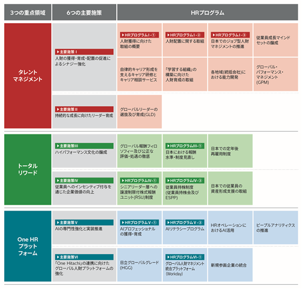
各主要施策及びHRプログラムの詳細は以下の通りです。
タレントマネジメント-主要施策Ⅰ：人財の獲得・育成・配置の促進によるシナジー強化
急速に変化する事業環境の中で組織のレジリエンスを維持するためには、人財・スキル・配置を、変化し続ける戦略的優先事項と継続的に整合させていくことが不可欠です。この考え方のもと、日立は長期的な成長を支える戦略の基盤として、タレントマネジメントの強化を進めています。具体的には、職務を基軸とした統合的なタレントマネジメントの枠組みを通じて、戦略実行に必要な人財・スキルの強化と、リーダーを適時・適所に配置できる体制の強化に取り組んでいます。また、人財の採用・育成・配置を一体的に連動させることで、グループ全体での効果的な人財流動を実現するとともに、継続的な学習と成長志向（グロース・マインドセット）の醸成を図っています。
（HRプログラムⅠ-① 人財獲得に向けた取組の概要）
グローバルな人財市場は、新たなスキルの急速な出現、候補者の価値観や期待の変化、人口動態の変化などにより、大きく変化しています。日立は、グローバルに優秀な人財を惹きつけ、採用していくために、要員計画・人財獲得・人財育成を一体的に推進する統合的なタレント戦略を策定し、変化する事業環境や求められる能力に柔軟に対応しています。
また、ビジネスユニット(BU)のタレントアクイジションチームは特定の地域・セクターにおける専門性を有する組織として配置されています。この体制により、機動的な採用活動を行うとともに、若手人財向けのプログラムや専門性の高いポジションへの対応等、ターゲットを明確にした取組を推進しています。さらに、各取組から得られた知見やベストプラクティスは組織横断で共有され、継続的な改善につなげています。
例えば、Hitachi Rail社では、長期的なプロジェクトの見通し（プロジェクトパイプライン）、技術ロードマップ及び地域別成長戦略と人財獲得戦略を一体的に連動させ、デジタル信号、ソフトウェアエンジニアリング、AIを活用した保守、システムエンジニアリング、サイバーセキュリティ及びサステナビリティ等の重要領域の人財確保に取り組んでいます。その目的は、汎用性の高いスキルを重視しつつ、採用、エンジニアリング、デジタルといった各チーム間の連携を強化するとともに、変化する業界のニーズに合わせて能力ギャップを先行的に特定し、将来に備えた人財の育成につなげることにあります。これにより、関連産業からの多様な人財の獲得や、必要スキルの迅速な確保を実現し、中長期的な人財のレジリエンス及び雇用の持続可能性の強化につなげています。
日本においては、新卒採用を中心に、ジョブ型を念頭においた個々のキャリア志向に応じた人財獲得戦略を推進しています。個人のキャリア志向と具体的な職務を結びつけ、それぞれの強みや希望に応じた最適な役割とのマッチングを図っています。その中核となるのが、ジョブ型インターンシッププログラムです。新卒候補者が実際の職務や業務に関わることで、専門領域や適性を自ら理解し、より主体的で納得感の高いマッチングを実現しています。
（HRプログラムⅠ-② 人財配置に関する取組）
日立では、役割・ケイパビリティ・事業戦略を整合させるグローバルかつ体系的なアプローチにより、人財の最適配置を推進し、組織全体にわたる効果的な人財活用を実現しています。この取組は、ジョブ型人財マネジメントによって支えられており、各役割に求められる要件を明確化するとともに、事業・地域をまたいで一貫性と客観性のある人財配置を可能にしています。
また、グローバル単位・事業単位・地域単位で実施するタレントレビューを通じて、従業員一人ひとりのケイパビリティ、パフォーマンス、ポテンシャルを可視化し、最適な人財配置や後継者計画に活用しています。さらに、社内公募制度を通じて、事業単位や地域単位を越えた内部人財の異動や活用を促進するとともに、多様なキャリア機会へのアクセスを提供することで、変化する事業ニーズへの対応力を高めています。
これらの施策は、グローバルでのタレントモビリティ（人財の流動化）に関する方針・枠組みの強化や、特に日本におけるジョブ型マネジメントの導入・拡大とあわせて推進しており、組織全体の一貫性、透明性及び公平性を高めるとともに、機会への平等なアクセスの確保につなげています。これにより、従業員のモチベーション向上と目的意識の共有を促進し、個人と組織の双方における持続的な成長を可能にしています。あわせて、人財の変化への対応力を高め、リーダー人財の継続的な育成を強化するとともに、事業戦略の実効を支えています。
|
■ Global One HR体制の構築／グループコーポレート 日立は、人財を地域・ファンクション・事業を越えて結集し、多様で専門性の高いグローバルなチームを構築することで、タレントモビリティの向上をはかり、「Global One HR」の体制を構築しています。その目的は、グローバルでの統合された実行力の強化と各事業・地域の連携を通じて、グローバルに人財施策を実行することです。その結果、より統合されたグローバルHR組織の構築や、セクター及び地域間の連携・コミュニケーションの強化、実行力の向上につながっています。また、継続的な試行錯誤を通じて、将来的なグローバル化に向けたモデルケースになるべく、推進していきます。 |
（HRプログラムⅠ-③ 日本でのジョブ型人財マネジメントの推進）
日立は、制度・仕組みの整備に加え、意識・行動変革を促す取組を通じて、日本におけるジョブ型人財マネジメントを推進してきました。その結果、その基盤は概ね確立されました。具体的な成果は複数の領域に表れています。例えば、グループ内の社内公募制度においては、過去５年間で募集ポジション数及び応募者数のいずれもが約２倍に増加しました。これにより、国籍、性別、年齢といった属性に左右されることなく、個人の意欲や能力に基づいて、各職務に最適な人財が配置されるケースが着実に増えました。これは、職務内容や求められる要件を明確化したことで、従業員が自らのスキルやキャリア志向に応じて主体的に応募する機会が拡大したことによるものです。
また、新卒採用においては、内定時点で職種や配属ポジションを明確にする「ジョブマッチング型採用」を導入しています。2025年に実施した内定者アンケートでは内定者の90％以上から、自身のスキルやキャリア志向と職務内容の高い適合性を実感できたこと、入社後の役割が明確であることにより、モチベーション向上につながっているとの肯定的な評価が寄せられました。
今後は、事業戦略の遂行に必要な職務を起点として、採用、報酬、能力開発・パフォーマンス向上、スキルや意欲に基づく配置・再配置までを一体で捉えたジョブ型サイクルを継続的に運用していきます。これにより、タイムリーな人財確保とパフォーマンスの最大化を実現するとともに、競争力のさらなる強化を図っていきます。
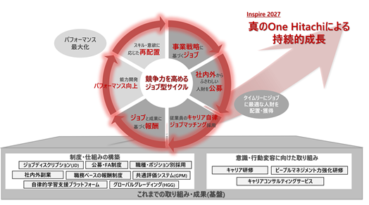
タレントマネジメント-主要施策Ⅱ：持続的な成長に向けたリーダー育成
日立では、将来にわたりグループ全体を牽引できるリーダー人財の育成を人財戦略の重要な柱としています。特に環境変化のスピードが加速し、事業のグローバル化が進む中、次世代リーダーの輩出が十分に進まない場合、事業の遂行力や組織の持続性に影響を及ぼすリスクとなり得ると認識しています。
日立は、将来のリーダー人財の層を強化するため、「これからのリーダーに求められる要件」を再定義し、それに基づいてリーダーシップ開発プログラムの高度化を進めています。あらゆる階層の人財を対象に、迅速に学び、組織全体を俯瞰して戦略的に思考し、変革を推進するとともに、多様な人財を活かし、明確なビジョンを示して周囲を鼓舞できるリーダーシップの育成をめざしています。
こうした取組を通じて、日立は次世代のグローバルリーダーを育成するとともに、グループ全体の後継者計画を支え、継続的にリーダー人財を育成・輩出する仕組みの構築を推進しています。
|
■ 学習とコーチングを通じたリーダーの育成／日立エナジー社 日立エナジー社のリーダーシップ開発プログラム「Power Your Leadership」は、eラーニングやワークショップ、協働型学習プログラムから構成される体系的なプログラムです。世界中の管理職を対象に、リーダーシップに対する意識の向上や、固定観念への挑戦、リーダーシップ行動の強化に活用されています。さらに、日立エナジー社では、全従業員に対してプロフェッショナル・コーチングの提供も行っています。こうした学習とコーチングを組み合わせることで、従業員一人ひとりが自己を省察し、潜在能力を引き出すとともに、組織全体に変革をもたらすことを目的としています。本プログラムは複数の事業部門や地域でグローバルに展開されており、2022年から2025年の間に250名以上が参加者し、2,100時間以上のコーチングを受けました。 |
トータルリワード-主要施策Ⅲ：ハイパフォーマンス文化の醸成
日立は、従業員一人ひとりが安心して能力を発揮し、野心的な目標に挑戦し続けられる環境・文化を育むことを重要な機会と位置づけています。公正で透明性の高い評価・処遇、成果や貢献に対して適切に報いる報酬制度、長期的な視点に立ったインセンティブ、そしてライフステージに応じた安心して働ける支援制度等を通じて、従業員のエンゲージメントとパフォーマンスの最大化を図っています。また、日立におけるトータルリワードは、短期的な成果のみならず、将来に向けた成長や挑戦という行動評価も重視し、組織への継続的な貢献を後押しする仕組みとして設計されています。
これにより、従業員一人ひとりの成長と企業価値の向上を連動させ、ハイパフォーマンス文化を強化するとともに、持続的な競争力の確立につなげています。
（HRプログラムⅢ-① 日本における報酬水準・制度見直し）
当社においては、労働市場環境の変化や人財の流動性の高まりを踏まえ、市場競争力のある処遇の実現を目的に、各職務等級における報酬水準の見直しを行い、報酬レンジの引き上げを実施しました。これは、従業員一人ひとりの挑戦と成果を適切に評価・還元することで、エンゲージメントの向上と価値創出の好循環を生み出すことを狙いとしています。あわせて、職務や役割に基づく公正で透明性の高い処遇を実現するため、日本においてもジョブ型報酬（Pay for Job）への段階的な転換を進めており、専門性や役割の重要性に応じた報酬設定を可能にすることで、事業戦略に即した人財ポートフォリオの構築を図っています。また、採用時に職位別の報酬レンジを公開する等、報酬に関する透明性の高い情報開示も進めています。
職務に基づく報酬制度の導入を通じて、職務の内容や責任の大きさといったより明確な報酬基準を設定することで、従来の職能型報酬制度と比較して、報酬に対する透明性と納得性の向上に寄与しています。
トータルリワード-主要施策Ⅳ：従業員へのインセンティブ付与を通じた企業価値の向上
日立は、従業員のインセンティブを企業の長期的な価値創出と整合させることを、人財戦略における重要な要素の一つと位置づけています。複雑かつ変化の激しい事業環境において、従業員が長期的な視点を持って行動することを促すことは、人財に関する機会を的確に捉え、実行力を高めることにつながります。このようなアプローチを通じて、日立はグループ全体における持続的な成長と価値創出を支える強固な基盤の構築をめざしています。
（HRプログラムⅣ-① シニアリーダー層への譲渡制限付株式報酬ユニット（RSU）制度）
日立は、新たに従業員向け株式報酬制度を導入し、当社の従業員並びに一部の子会社の取締役及び従業員のうち、各事業部門のCEO及びコーポレート部門等の部門長から２～３階層下を目安とした経営リーダー層を対象者として、世界約40か国超、約1,800名にRSUを付与しました（注）。これにより、経営リーダー層全体にオーナーシップの意識を浸透させ、経営的視点の醸成を促すとともに、対象者と株主の利益を一致させることで、長期的な企業価値創出を図ります。さらに、従業員のエンゲージメント向上と、優秀な人財の獲得と定着をめざします。
（注）海外法規制により株式を交付することが困難な国の居住者等に対しては、信託による当社株式の交付に代えて、RSU 相当額の金銭を給付します。
（HRプログラムⅣ-② 従業員持株制度（従業員持株会及びESPP)）
当社及び一部の国内グループ会社は、従業員の資産形成の支援や経営参画意識の向上を図るため、従業員持株会を導入しています。なお、従業員持株会を通じた保有株式は、大株主順位第７位（発行済株式（自己株式を除く。）の総数に対する所有株式数の割合1.64％）となっています（2026年３月末時点）。また、日本以外の国・地域の従業員（注）も株式を購入できるよう、新たな仕組み（従業員向け株式購入プラン：ESPP）の導入を推進しています。2027年度までにESPPの対象者を15万人とすることを目標に、制度の拡充に取り組んでいきます。従業員持株制度（従業員持株会及びESPP）では、当社の株式取得にあたり、資産形成に関する教育を行うほか、従業員は当社の業績に応じた奨励金の支給を得られるようになっており、会社の成長が従業員の資産形成につながる仕組みとしています。これら取組を通じ、資産形成の支援をより一層推進するともに、帰属意識を高め、従業員と株主の価値共有を図ります。
（注） 法的又は実務的に導入が困難な従業員は除きます。
One HR プラットフォーム-主要施策Ⅴ：AIの専門性強化と実装推進
日立は、AIを将来に向けた競争力及び価値創出の重要なドライバーと位置づけ、AIに関する専門性の強化と浸透を人財戦略の中核要素の一つとしています。将来を見据えた人財及び組織を実現する上で、AIを理解し、活用できる能力の育成は不可欠であると考えています。その一方で、AIに関する知識やそれを活用するスキルが十分に組織全体へ浸透しない場合、技術進化への対応が遅れ、競争力の低下につながるリスクがあるほか、リスクマネジメントや倫理面での課題が顕在化する可能性も認識しています。
これらを踏まえ、日立はグループ全体でAI関連ケイパビリティの強化を通じて事業変革の実行力を高めるとともに、テクノロジーに起因するリスクを適切に管理し、持続的かつ中長期的な成長の実現をめざしています。
（HRプログラムⅤ-① AIプロフェッショナルの獲得・育成）
日立におけるAI人財の強化は、AIプロフェッショナル人財５万人の育成をめざし、2024年より開始しました。AI技術の進化とその適用範囲の拡大により、エージェンティックAI、フィジカルAI等へ注力エリアが拡大しており、育成・採用の両面から、各部門における事業推進に必要なAIスキル・ケイパビリティの獲得を推進しています。本取組を通し、2025年度は、AIプロフェッショナル人財を約39,000人規模まで拡大することができました。育成にあたっては、各事業推進に必要な人財に求められるスキルを迅速に習得させるため、日立独自の育成プログラムに加え、様々な外部リソースを柔軟に組み合わせて、グローバルに展開しています。
|
■ 業務支援AI応用プロジェクト／日立電梯（中国）有限公司 日立電梯（中国）有限公司は、技術開発とガバナンスを統合したAI管理プラットフォームを構築し、業務支援AI応用プロジェクトを推進しています。同プラットフォームの活用により、事業ユニット間でAIケイパビリティの共有・再利用を可能とするとともに、業務プロセスへのインテリジェントツールの組込を進めています。 |
（HRプログラムⅤ-② AIリテラシープログラム）
日立は、従業員教育、実践的なAI活用、そして強固なガバナンスを統合した、組織横断的かつ体系的な取組により、AIリテラシーの強化を進めています。この取組は、次の３つの柱に基づいています。
１．日立はAI CoEを設置しています。AI CoEは、日立グループの責任あるAI原則に基づき、安全性・倫理性・実践性を確保しながら、AIの活用による価値創出を推進する全社組織として、中核機能を担っています。
２．当グループは、全社的なAIリテラシー研修プログラムを展開しています。本プログラムでは、AIに関する基礎的な理解の醸成、AI技術への親和性の向上、並びにリスクマネジメントやAI活用に向けた準備意識の強化に注力しており、日立のガバナンス基準及び倫理ガイドラインと整合しています。
３．人財部門をはじめとする各機能部門が連携し、AI活用の知見を共有・蓄積する部門横断的なコミュニティである、デジタル・コミュニティ・オブ・プラクティスを形成しています。このコミュニティでは、AIツールを日常業務へ組み込む取組を通じて、AI活用の知見を共有するとともに、ナレッジ共有や従業員同士の相互学習を通じて、継続的な学習を促進しています。
One HR プラットフォーム-主要施策Ⅵ： 「One Hitachi」の連携に向けたグローバル人財プラットフォームの強化
日立は、戦略的人財活用の高度化を重要な機会と捉え、グローバルで統合されたタレントマネジメント基盤の構築を推進しています。こうした基盤の整備が不十分であったり、運用にばらつきが生じたりした場合には、人財の可視化や最適配置が阻害され、日立グループ全体の競争力低下につながるリスクがあると認識しています。これを踏まえ、日立は人財データベースの構築や、選抜されたトップ人財を対象とするグローバルリーダー育成プログラムの導入を起点として、職務等級及びパフォーマンスマネジメントの共通化、グローバル学習プラットフォーム並びにグローバル人財マネジメント統合プラットフォーム（Workday）の整備へと取組を拡大しています。これらの施策を通じて、国や事業を越えた人財の可視化を実現するとともに、リーダー人財の戦略的な育成及び登用を可能にし、組織全体における意思決定力と実行力の強化につなげています。
（HRプログラムⅥ-① グローバル人財マネジメント統合プラットフォーム（Workday））
グローバルに最適な人財の確保・配置・育成を行うため、グローバル共通の人財マネジメント統合プラットフォーム（Workday）の構築を進めるとともに、グローバルでのタレントモビリティを促進しています。Workdayプラットフォームの構築を通して、従業員のスキルやキャリア志向など最新の人財情報データをクラウドシステムで共有しています。このプラットフォームにより、グローバルでの人財検索や情報の収集、チームマネジメントへの活用、パフォーマンス管理や育成計画・キャリア開発など、さまざまなプロセスを一元管理でき、その運用範囲をグループ全体に順次拡大しています。
さらに、今後は自律的に学べる環境の整備に向けてグローバルでの教育プラットフォームを展開していきます。
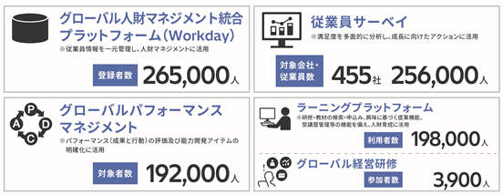
|
■ スケーラブルな人財成長を支えるグローバルHRプラットフォーム／日立エナジー社 日立エナジー社は、強固なデジタル基盤と標準化されたプロセスを活用し、2024年から2027年にかけて15,000人規模の採用・人財統合を含む大規模な人財拡大を支えるグローバルHRプラットフォームの強化を進めています。その目的は、単一のグローバルHRマスターデータを基盤とし、標準化されたガバナンスと明確な役割分担のもとで、データ品質の向上、業務効率化、部門横断の連携強化を実現し、スケーラブルかつデータドリブンな人財マネジメントを可能にすることです。その結果、年間100万件を超える応募処理や大規模採用・人財流動の推進を実現し、オートメーションやデータ分析、セルフサービスツールを通じて業務効率の向上を図るとともに、多様性・包摂性及び高パフォーマンス文化の強化に貢献しています。 |
|
（c）各主要施策及びHRプログラムを通じた従業員エンゲージメント向上 |
|
|
日立は、人財マネジメントの一環として、グローバル従業員サーベイ（Hitachi Insights）を通じて従業員エンゲージメントを継続的に把握するとともに、その取組を評価・改善するために、従業員エンゲージメントスコア（注）をKPIとして設定しています。具体的には人財の配置、企業文化及び職場環境などに関わる主要なエンゲージメントドライバー（従業員エンゲージメントを高める上で相関性の高い項目）に焦点をあて、各種施策を展開しています。 |
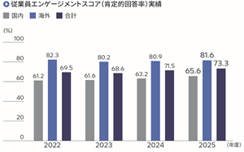 |
|
また、タウンホールミーティング、ラウンドテーブルディスカッション及び社内のソーシャルプラットフォームを通じて、経営層と従業員との双方向コミュニケーションを強化し、経営の透明性向上を図っています。こうした取組の結果、2025年度の従業員エンゲージメントスコアは73.3ポイントとなり、2024年度比で1.8ポイント向上しました。Inspire 2027においては、80ポイントという意欲的な目標を掲げており、その達成に向けて引き続き取組を推進していきます。2026年度以降は、従業員からのフィードバックをさらに効果的に活用するため、サーベイの再設計を進めるとともに、分析及びアクションプラン策定においてAIの活用を進めていきます。加えて、サーベイ結果の活用により上長とチームメンバーの対話の機会を促進することで、従業員一人ひとりのオーナーシップ意識を醸成し、専門性の成長を促すとともに、組織全体のパフォーマンス向上をめざします。 |
|
（注）従業員サーベイにおける従業員エンゲージメントの設問に対する肯定的回答率。（「自社で働くことへの誇り」、「働き甲斐のある職場であるか」「当面自社で勤務する勤労意識」の３点から測定）
|
■「Ask Me Anything」セッション 日立は、CHRO（Chief Human Resources Officer）が従業員からの質問に直接回答する「Ask Me Anything」セッションを開催し、グローバルで数多くの人財が参加しました。経営に関するトピックについて率直かつオープンな対話の場を提供することで、双方向コミュニケーションの促進と経営の透明性の向上につなげています。また、従業員のエンゲージメント向上と組織としての方向性の共有を目的に、本セッションに加え、事業別のグローバルなタウンホールミーティングも実施しました。これらの取組を通じて、会社の戦略的優先事項や事業の方向性、人財戦略に対する理解を深めるとともに、インクルーシブで参加型の職場文化の醸成を図っています。 |
|
■ タウンホールミーティング タウンホールミーティングは、経営層と従業員が直接対話し、経営戦略や重要課題を、その背景とともに、透明性高く共有する場であり、双方向のコミュニケーションを通じた理解促進を担っています。 従業員の「自分事化」を促し、エンゲージメント向上と企業文化の浸透並びに「One Hitachi」としての一体感の醸成を図ることを目的としています。2025年度は計50回以上にわたって世界各地で幅広く実施され、組織内の透明性及び信頼関係の向上にもつながっています。 |
ii） 多様な視点を取り入れた事業活動推進
日立は、多様な視点を持ちあわせた人財からなる組織を作ることで、グローバルな顧客に最適なサービスを提供し、世界が直面する社会課題に対応するための革新的なソリューションを継続的に提供し続けられると考えています。このような組織の基盤となるのは、相互に協力し支え合うカルチャーであり、これは、日立がめざす社会イノベーション事業を通じた中長期的な企業価値向上や、サステナブルな社会の実現に不可欠なものです。そのため、日立は、従業員一人ひとりの持つ価値が認められ、尊重され、能力が最大限に発揮できるインクルーシブな職場環境の醸成にコミットしてきました。日立では、執行役社長によるトップコミットメントのもと、多様な視点に沿った取組をグローバルに推進しています。
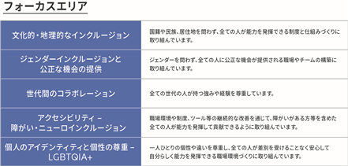
|
■ インクルーシブ・リーダーシップ・ワークショップ 複雑なビジネス環境において、多様な人財を尊重し、イノベーションを推進して競争力を高めるために必要なスキルとなる「インクルーシブ・リーダーシップ」の重要性を理解するため、「インクルーシブ・リーダーシップ・ワークショップ」を2023年度より実施しています（2023年度は役員層84名が出席。2024年度は対象者を約130名に拡大。）。このワークショップは、インクルーシブ・リーダーシップを発揮するための具体的なアクションを習得することを目的としており、2025年度は、約3,000名のシニアリーダー層に拡大して実施しています。
|
|
■ プライド月間（LGBTQIA+） インクルーシブでオープンな企業文化の醸成の一環として、グローバル及び各地域において、多様な視点、考え方及び価値観を持つことの重要性の理解を促進するためのイベントやウェビナーを開催しました。また、日本においては、国内最大のLGBTQIA+関連のイベントである「Tokyo Pride 2025」に協賛し、LGBTQIA+インクルージョンの継続的な取組を実践しました。このイベントに協賛することは、現在及び将来の従業員全てに対して、心理的安全性及びインクルーシブな企業文化を大切にするという、日立の姿勢が反映されています。
|
|
■ インクルージョン月間 日立は2025年10月を「インクルージョン月間」として設定し、この期間をイノベーションと成長に不可欠なインクルージョンについての理解を深める機会としました。本期間中は、リーダーによるメッセージ発信や、全従業員を対象としたeラーニングの展開に加え、日本においては、インクルージョンに関する日々の行動を促す「30Days チャレンジ」を実施し、従業員一人ひとりがインクルーシブな行動を意識し、実践するきっかけを提供しました。これら一連の取組を通じて、「従業員全ての声が尊重され、インクルーシブで心理的安全性が高い職場環境を育むことが重要である」というメッセージを強調しました。
|
|
■ 障がいのインクルージョン 日立は一人ひとりの「エンパワーメント（主体性向上）」を軸に、障がいのインクルージョンをビジネスの中心に据え、社会変革をめざすグローバルネットワーク「The valuable 500」への参画、デフリンピック協賛などを通じて、多様な個性がイノベーションの原動力となる組織文化をグローバルに醸成しています。 あわせて、独自のガイドラインやセミナーを通じた意識変革と制度の最適化を推進することで、全ての従業員が社会に貢献し、自分らしく輝けるインクルージョンの実現を加速させています。 また、アクセシビリティは、職場環境のみならず、広範なシステムやツールに組み込まれています。なお、日立の新しいグローバルブランドガイドラインでは、アクセシビリティを重視したタイポグラフィ（書体）を採用するなど、全ての従業員、パートナー、顧客が公平に日立のコンテンツへアクセスし、関与できるようにしています。
|
|
■ 従業員リソースグループ（ERG） 日立全体において、共通の特性や関心を持つ社員が従業員リソースグループ（ERG）として自主的に活動し、職場における意識向上、実体験の共有、実践的な改善の推進において重要な役割を果たしています。ERGは、各ビジネス・地域単位で活動しており、意識向上に関するキャンペーンからアクセシビリティ評価に至るまで、様々な取組を主導し、インクルーシブな職場環境づくりを推進しています。
|
|
■ 女性リーダー育成に関する取組 当社及び国内のグループ会社の管理職に占める女性従業員の割合は、徐々に増加しているものの、未だ十分な割合に達しているとはいえず、女性リーダー育成の取組を強化しています。具体的には、女性のキャリア支援やワークライフバランスを実現するための取組を、以下のとおり進めています。
・若年層向け女性キャリア研修、女性向けメンタリングプログラム等による女性のキャリア支援、育休前・復職後のキャリア支援、多様な働き方促進セミナーによる多様な働き方の選択肢の提供等を実施 ・男性の育児参画の促進に向け、育児休暇制度の検討等を促すプレパパ・プレママセミナーや、育児休暇の取得計画・上長とのコミュニケーションをサポートするシステム（育休取得宣言）の導入 ・法定の制度を上回る育児・介護等のライフサポート目的の休暇・休職制度や、コンシェルジュサービスの拡充（「育児と女性の健康コンシェルジュ」「企業主導型保育園とのマッチングサービス」による保育園への入所、及び女性の健康に関するサポート）
|
ⅲ） 心身の健康と安全の確保
日立は、「安全と健康を守ることは全てに優先する」を基本理念とする「日立グループ安全衛生ポリシー」を世界の全グループ会社と共有しています。そして、コントラクターや調達パートナーを含む関係する全企業と連携しながら、グループ一丸となって、事業活動に関わる全ての人にとって安全・安心・快適で健康な職場づくりに努めています。当グループは、事故のない安全な職場の構築をめざし、事業に適した労働安全衛生マネジメントシステムの構築・導入、定期的なリスクアセスメントや監査の実施、労働安全衛生に関する教育の展開等にグローバルで取り組んでいます。2025年度は死亡災害が発生していることを重く受け止め、重大災害防止に向けた事故予防活動の向上を更に図るべく、グループグローバルでのリスクアセスメント活動の強化を推進しています。リスクアセスメントの質を高めるには、危険源を的確に把握し、実効性のある対策を講じることが重要です。これを各グループ会社・事業所で着実に実践できるよう、AIや過去の知見の活用も取り入れながら、リスクアセスメントのレベル向上を図っています。全ての災害は防ぐことができるという強いリーダーシップのもと、災害のない職場作りをめざして、今後も取組を継続します。
（ロ）指標及び目標
Inspire 2027における具体的な人財施策の実行にあたっては、各施策が経営目標や主な経営戦略にどのように繋がっているかを整理し、それぞれの人財戦略・施策に対してKPIを設け、進捗をモニタリングしています。そのうち、特に重要性が高い人財戦略・施策に関連するものについては日立のサステナビリティ戦略である「PLEDGES」における人財目標として以下のとおり設定し、全社的な取組として2027年度目標の達成に向けて推進しています。
|
区分 |
指標 |
目標 |
2025年度 実績 |
|
PLEDGES における指標 |
|
|
約 |
|
|
|
約 |
|
|
|
|
|
|
|
|
|
|
|
|
|
|
約 |
|
|
|
|
約 |
|
|
|
年間 |
年間 |
|
|
|
|
|
|
|
その他 重要指標 |
|
|
|
|
（グローバル目標） |
|
(2026年４月現在) |
（注）１．海外法規制により株式を交付することが困難な国の居住者等に対しては、信託による当社株式の交付に代えて、RSU 相当額の金銭を給付します。
２．Total Recordable Injury Frequency Rate（20万労働時間当たりの死傷者数）
３．「2030年までに東証プライム市場に上場する企業の女性役員の割合を30％以上にする」という政府の要請に沿ったものです。当社単体の目標及び実績で、役員層は、当社執行役及び理事をいいます。
（１）リスクマネジメントについて
日立の事業活動は、AI等のデジタル技術の革新やグローバル化の進展等を経て変容しており、経営に重大な影響を与えうるリスクの種類が多様化しています。個々のリスクは、相互に作用し、連鎖的・複合的に事業活動に影響を及ぼしうるため、当該リスクの性質や発生可能性、発生した場合の日立への影響度等の観点から、多面的に捉える必要があります。また、日立が中長期的に企業価値を向上させていくためには、リスクを単に「脅威」として捉えるだけでなく、ビジネスの「機会」としてのポジティブな側面を捉え収益機会を創出しながら、リスクマネジメントを実施することが重要です。そのため、グループ全体で網羅的・効率的・組織的なリスクマネジメントを推進するべく、COSO-ERMやISO31000等の国際的なリスク管理フレームワークを参照し、グループ全体でのリスクマネジメント体制及びリスクマネジメントプロセスを整備しています。
①リスクマネジメント体制
日立は、グループリスクマネジメントにかかる社内規程に基づき、グループのリスク情報を管理し、重要度の高いリスクに優先的に対応するための体制を整備しています。グループ全体におけるリスクマネジメントの責任者であるCRMO（Chief Risk Management Officer）が、リスクをグループ横断で把握し、経営会議及び取締役会に対してリスクへの対応状況等を報告します。
また、グループにおけるリスクマネジメントの機能及び役割を３つに分類・整理し、リスクマネジメント体制を構築しています（「３ラインモデル」）。それぞれの機能及び役割は以下の通りです。
第１ラインであるセクター及びビジネスユニット（BU）は、それぞれにセクターRMO（Risk Management Officer）とBU RMOを配置し、所管のセクター/BUのリスクマネジメントを実施・統括して、その状況をCRMO及びグループ・コーポレートへ報告します。
第２ラインであるグループ・コーポレートは、必要に応じてRMOを配置して各部門におけるリスクマネジメントを行うとともに、CRMOと連携し、第１ラインにおけるリスクマネジメントへの助言や支援、モニタリング等を行います。
第３ラインである監査室は、第１ライン、第２ラインから独立して、リスクマネジメントについての検証・評価をし、必要に応じて助言を行います。
上記に加えて、日本を含む各リージョンにもRMOを配置してCRMOと連携しながら、第１ラインに対して所管する地域の視点からリスクマネジメントの助言を行います。
今後は、RMO間の情報共有及び横断的な連携を一層活性化させ、グループ全体でのリスクマネジメント推進体制の強化を図っていきます。
<グループリスクマネジメント体制>
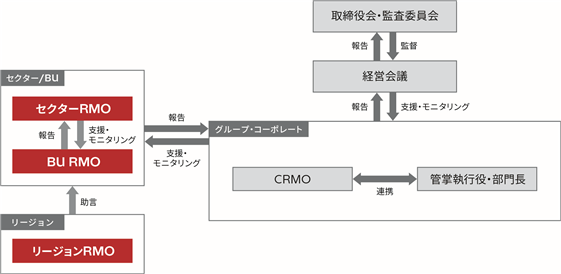
②リスクマネジメントプロセス
日立では、グループ共通のリスク項目及びリスクの評価方法等を定めた社内規程に基づき、社内外における経営環境の変化に合わせて、以下のようなプロセスにより、リスクの特定・評価、リスクへの対応及び改善を継続的に行っています。
（イ）リスクの特定・評価
セクター及びBUが、グループ共通のリスク項目を基に、当該事業活動に関連するリスクを特定し、発生時の影響度（（注）１）と発生可能性（（注）２）を評価します（ボトムアップアプローチ）。ボトムアップアプローチでの評価結果について、経営会議メンバー等が、グループ全体及びリスク全体等の観点から調整を行います（トップダウンアプローチ）。
トップダウンアプローチの結果をリスクヒートマップ等で整理しながら、経営会議において、グループトップリスクを選定します。さらに、その中で重点的に議論や対応が必要なものを重点取組み分野として設定します。
（注）１．影響度
「財務」「従業員」「顧客・ビジネスパートナー」「法規制」といった要素やステークホルダーの観点から評価します。
２．発生可能性
過去の発生実績と、推定される将来の発生確度の観点から評価します。
（ロ）リスクへの対応
特定・評価されたリスクについて、回避、低減、移転又は受容等の観点から、リスク対応策を策定・実行します。また、戦略的な人財確保、サプライチェーン体制の強化等といった経営上の重要な分野を含む、上記（イ）のプロセスで設定された重点取組み分野については、経営会議において対応状況が報告され、対応策、対応スケジュール等について有効性や妥当性が議論されます。
（ハ）改善
リスクの特定、分析・評価、対応が適切に行われているかを確認し、必要に応じて改善を継続的に実施しながら、変化する経営環境に対応します。
また、「We Are All Risk Managers」というスローガンのもと、行動変革を促す教育プログラムや人財強化に取り組むことで、グループ全体のリスクカルチャー及びリスク・オーナーシップを醸成し、リスクマネジメントプロセスの実効性を高めることに努めています。
|
<リスク評価のプロセス> |
<グループリスクヒートマップ（例）> |
|
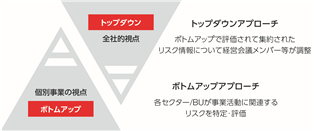
|
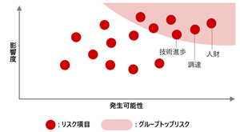 |
（２）リスク要因
当グループは、幅広い事業分野にわたり、世界各地において事業活動を行っています。また、事業を遂行するために高度で専門的な技術を利用しています。そのため、当グループの事業活動は、多岐にわたる要因の影響を受けています。その要因及び各リスク要因に対する対応策の主なものは、次のとおりです。
なお、これらは当有価証券報告書提出日現在において合理的であると判断している一定の前提に基づいています。また、これらの対応策は各リスク要因の影響を完全に排除するものではなく、また、影響を軽減する有効な手段とはならない可能性があります。
①経済環境に係るリスク
経済の動向
当グループの事業活動は、世界経済及び特定の国・地域の経済情勢や地政学的情勢の影響を受けます。各国・地域や日本の景気が減速・後退する場合は、個人消費や設備投資の低下等をもたらします。また、特定の国・地域における紛争や緊張の高まりにより、当該国・地域を含むグローバルでの経済活動の制約や停止を余儀なくされることも考えられます。その結果、当グループが提供する製品・システム又はサービスの一部制限や需要の減少等により、当グループの事業、財政状態及び経営成績に悪影響を及ぼす可能性があります。
かかるリスクへの対応として、当グループは、様々な事業分野・地域において、多様な特性を持つ社会イノベーション事業を組み合わせる経営をしています。また、リスク評価等を通じて地政学的情勢の変化への迅速な対応を図っています。
為替相場の変動
当グループは、取引先及び取引地域が世界各地にわたっているため、為替相場の変動リスクにさらされています。当グループは、現地通貨建てで製品・サービスの販売・提供及び原材料・部品の購入を行っていることから、為替相場の変動は、円建てでの売上の低下やコストの上昇を招き、円建てで報告される当グループの経営成績に悪影響を及ぼす可能性があります。当グループが、売上の低下を埋め合わせるために現地通貨建ての価格を上げた場合やコストの上昇分を吸収するために円建ての価格を上げた場合、当グループの価格競争力が低下し、それに伴い、経営成績は悪影響を受ける可能性があります。また、当グループは、現地通貨で表示された資産及び負債を保有していることから、為替相場の変動は、円建てで報告される当グループの財政状態に悪影響を及ぼす可能性があります。
当事業年度末時点における2027年３月31日に終了する連結会計年度の為替感応度（見通しの為替レートから１円変動した場合の業績影響額）の見積りは、以下のとおりです。
|
通貨 |
見通し |
為替感応度(億円) |
|
|
売上収益 |
Adjusted EBITA |
||
|
ドル |
150円／ドル |
145 |
15 |
|
ユーロ |
175円／ユーロ |
90 |
8 |
かかるリスクへの対応として、当グループでは、先物為替予約契約や通貨スワップ契約等の為替変動リスクのヘッジや製品・サービスの地産地消戦略の推進等を実行しています。
資金調達環境
当グループの主な資金の源泉は、営業活動によるキャッシュ・フロー、銀行等の金融機関からの借入並びにコマーシャル・ペーパー及びその他の債券、株式の発行等による資本市場からの資金調達です。当グループは、これらの資金源により事業活動やその他の流動資金の需要を充足できると考えていますが、世界経済の悪化や金融市場の混乱等により、資金調達環境や条件に影響を及ぼす可能性があります。世界経済が悪化した場合、当グループの営業活動によるキャッシュ・フロー、業績及び財政状態に悪影響を及ぼし、これに伴い当社の債券格付けにも悪影響を及ぼす可能性があります。債券格付けが引き下げられた場合や、金融市場の混乱等が生じた場合、当グループの資金調達コストが上昇し、当グループの財政状態及び経営成績に悪影響を及ぼす可能性があります。また、当グループの主要な取引金融機関が倒産した場合又は当該取引金融機関が当グループに対して融資条件の変更や融資の停止を決定した場合、当グループの資金調達に悪影響を及ぼす可能性があります。
かかるリスクへの対応として、当グループは、主にキャッシュ・フロー創出力強化及び継続的な保有資産の見直し推進等による資金源泉の確保に努めるとともに、金利上昇リスクを軽減するために金利スワップ取引等を利用しています。しかしながら、資金調達環境の変化によっては、当グループが有利と考える条件での追加的な資金調達が困難となる可能性があります。
株価の下落等
当グループは、他社との事業上の関係等を維持又は促進するため、株式等の有価証券を保有しています。かかる有価証券は、価値の下落リスクにさらされています。株式の市場価格等の価値の下落に伴い、当社及び連結子会社は、保有する株式等の評価損を計上しなければならない可能性があります。さらに、当社及び連結子会社は、契約その他の義務により、株価の下落等にかかわらず、株式等を保有し続けなくてはならない可能性があり、このことにより多額の損失を被る可能性もあります。
当事業年度末時点において、当社が保有している投資株式の銘柄数及び貸借対照表計上額は、以下のとおりです。
|
|
銘柄数 （銘柄） |
貸借対照表計上額の合計額 （百万円） |
|
非上場株式 |
104 |
21,206 |
|
非上場株式以外の株式 |
31 |
250,312 |
かかるリスクへの対応として、当社は、取引や事業上必要である場合を除き、投資株式を取得・保有しないことを基本方針とし、既に保有している株式についても、保有意義や合理性が認められない限り、売却を進めています（保有目的が純投資目的以外の目的である投資株式の保有方針及び保有の合理性の検証について、「第４ 提出会社の状況 ４ コーポレート・ガバナンスの状況等 （５） 株式の保有状況」参照）。
②サプライチェーンに係るリスク
原材料・部品の調達
当グループの生産活動は、調達パートナーが時宜に適った方法により、合理的な価格で適切な品質及び量の原材料、部品及びサービスを当グループに供給する能力に依存しています。需要過剰の場合、調達パートナーは当グループの全ての要求を満たすための十分な供給能力を有しない可能性があります。原材料、部品及びサービスの不足は、急激な価格の高騰を引き起こす可能性があります。また、米ドルやユーロをはじめとする現地通貨建てで購入を行っている原材料及び部品については、為替相場の変動の影響を受けます。石油、銅、鉄鋼、合成樹脂、レアメタル、レアアース等の市況価格の上昇は当グループの製造コストの上昇要因であり、当グループの経営成績に悪影響を及ぼす可能性があります。一方、原材料及び部品等の商品価格が下落した場合には、棚卸資産の評価損等の損失が発生する可能性があります。さらに、自然災害等により、調達パートナーの事業活動やサプライチェーンが被害を受けた場合、当グループの生産活動に悪影響を及ぼす可能性があります。また、調達パートナーにおいて児童労働や強制労働等の労働者の人権に関する法令違反等が発生した場合、発注元としての当グループの評判の低下や、当該調達パートナーからの安定した原材料・部品の調達に支障が生じ、当グループの事業、財政状態及び経営成績に悪影響を及ぼす可能性があります。
かかるリスクへの対応として、当グループは、複数の調達パートナーとの緊密な関係構築や製品・サービスの地産地消戦略の推進による各地域における需要変動への適切な対応、長期契約等による価格変動リスク低減、国内及び主要海外拠点における事業継続計画（BCP）の策定による事業中断リスクへの対応力強化、グループ全体としての調達機能の活用・強化等を実行しているほか、調達パートナーにおける法令違反等の発生を防ぐため、質問票を用いた自己点検や監査、理解促進の取組を実施しています。
取引先の信用リスク
当グループは、国内外の様々な顧客及び調達パートナーと取引を行っており、売掛金、前渡金等の信用供与を行っています。取引相手の財政状態の悪化や経営破綻等が生じた場合、当グループの財政状態、経営成績及びキャッシュ・フローに悪影響を及ぼす可能性があります。
かかるリスクへの対応として、当グループでは、定期的な信用調査や信用リスクに応じた取引限度額の設定等、信用リスクの管理のための施策を実施しています。
③海外事業における地政学等のリスク
海外における事業活動
当グループは、事業戦略の一環として海外市場における事業の拡大を図っており、これを通じて、売上の増加、コストの削減及び収益性の向上等の実現をめざしています。当グループの海外事業は、事業を行う海外の各国において、以下を含む様々な要因による悪影響を受ける可能性があります。
・投資、輸出、関税、公正な競争、贈賄禁止、消費者及び企業に関する税制、知的財産、外国貿易及び外国為替に関する規制、人権や雇用・労働に関する規制、環境及び資源・エネルギーに関する規制
・取引条件等の商慣習の相違
・労使関係、労働慣行の変化
・対日感情、地域住民感情の悪化、各種団体等による批判やキャンペーン
・国家間や国内における紛争の拡大と頻発
・国家の安全保障や外交政策の変化
・各国の経済安全保障政策の強化
・その他の政治的及び社会的要因、地政学リスク、経済の動向並びに為替相場の変動
これらの要因により、当グループが、海外における成長戦略の目的を達成できる保証はなく、当グループの事業の成長見通し及び経営成績に悪影響を及ぼす可能性があります。
かかるリスクへの対応として、当グループは、グローバルな政治・経済情勢等を定常的に把握して事業に及ぼす影響を分析し、海外リスク資産の移転を行う等、グループ全体での対応を実行しています。
④環境に係るリスク
気候変動対策に関する規制強化等（脱炭素への移行リスク）
当グループは、炭素税、燃料・エネルギー消費への課税、非化石エネルギーの調達や排出権取引等の導入に伴う事業コストの負担増、製品・サービスの技術開発の遅れによる販売機会の逸失、投資家や社会に当グループの気候変動問題への取組姿勢が評価されない場合に、当グループの事業活動、経営成績及び財政状態に悪影響を及ぼす可能性があります。
かかるリスクへの対応として、環境長期目標「日立環境イノベーション2050」を掲げ、脱炭素化の実現に向けた様々な取組を進めており、今後も目標達成に向けた取組をさらに加速していきます。事業所においては2030年度カーボンニュートラルをめざしており、日立インターナルカーボンプライシング導入等による省エネ機器・再生可能エネルギーによる電力の導入の推進、生産・輸送のさらなる効率化、非化石エネルギー由来の電力利用の促進等により、炭素税等の事業コスト負担増加等の回避・軽減や評価リスクの低減を図っています。バリューチェーンにおいては2050年度までのネットゼロをめざし、温室効果ガス（GHG）排出量削減につながる革新的な製品・サービスの開発・拡販に加え、省エネルギー化を通じたエネルギー削減に資する製品・サービスの開発等をめざしています。
⑤人的資本に係るリスク
人財確保等
当グループの競争力を維持するためには、事業遂行に必要な優秀な人財を採用し、確保し続ける必要があります。特に、当グループは、現在、グローバルに活躍できる人財や顧客に近いところでニーズをくみ取り、最適なソリューション・サービスを提供することができる人財、持続的な成長をけん引するグローバルリーダー、AIプロフェッショナル人財等を求めています。しかしながら、優秀な人財は限られており、かかる人財の採用及び確保の競争は激化しています。当グループがこのような優秀な人財を新たに採用し、又は雇用し続けることができる保証はありません。また、当グループは、グローバルに事業を展開する中で、当グループ及び調達パートナー等の従業員等を含む、事業活動に関与する人員の安全及び健康の確保が事業継続の前提となっています。重大な労働災害や事故、職場における安全衛生管理の不備等が発生した場合には、従業員等の就労不能、操業停止、プロジェクトの遅延等を招き、当グループの事業活動、経営成績及び財政状態に悪影響を及ぼす可能性があります。
かかるリスクへの対応として、当グループは、国内外で必要な人財をタイムリーに確保するため、競争力のある報酬の設定、多様な視点を取り入れた事業活動の推進、多様な人財が働きやすい職場づくりの推進とエンゲージメントの向上、グローバル共通の人事制度、人財プラットフォームの活用、社内教育プログラムの実践等による優秀な人財の確保・育成を図っています。加えて、当グループは、事業活動に関与する人員の安全及び健康の確保のため、国内外のグループ会社において統一的な安全衛生管理の枠組みのもと、事業特性に応じた労働安全衛生マネジメント体制の構築及び導入、定期的なリスクアセスメントの実施、教育・訓練の実施等を通じて、労働災害の未然防止と安全で健康的な就労環境の確保に努めています。
⑥テクノロジーに係るリスク
情報システムへの依存
当グループの事業活動において、情報システムの利用とその重要性は増大しています。コンピュータウイルスその他の要因によってかかる情報システムの機能に支障が生じた場合、当グループの事業活動、経営成績及び財政状態に悪影響を及ぼす可能性があります。
かかるリスクへの対応として、当グループは、継続的にサイバーセキュリティ対策等を推進しており、情報システムに適用される技術・製品・利用手順等を厳格に定めて運用していますが、従来にないサイバー攻撃を受けた場合や当社管理外のシステムに脆弱性があった場合には有効な手段とはならない可能性があります。
急速な技術革新
当グループの事業分野においては、新しい技術が急速に発展しています。先端技術の開発に加えて、先端技術を継続的に、迅速かつ優れた費用効率で製品・システム・サービスに適用し、これらの製品等のマーケティングを効果的に行うことは、競争力を維持するために不可欠です。例えば、現在、AIの活用、デジタル化・ロボット等による自動化、電動化、脱炭素や資源循環等の環境への技術革新への対応等が重要となっています。このような変化の潮流を捉え、顧客に価値を提供し続けるために、グループ内の研究開発及びコーポレートベンチャーファンドを通じたスタートアップへの投資に対して多くの経営資源を投入しています。これらの先端技術の開発が予定どおり進展しなかった場合、当グループの事業、財政状態及び経営成績に悪影響を及ぼす可能性があります。
かかるリスクへの対応として、当グループは、産官学によるオープンイノベーションやデジタル人財の確保・育成、Lumadaによる協創プロセスを通じた顧客ニーズの把握のほか、これらを通じたイノベーションエコシステムの形成を図っています。
⑦自然災害に係るリスク
大規模災害及び気候変動による物理的影響等（気候変動の物理的影響に関連したリスクを含む）
当グループは、日本国内において、研究開発拠点、製造拠点及び当社の本社部門を含む多くの主要施設を有しています。過去において、日本は、地震、津波、台風等多くの自然災害に見舞われており、今後も、大規模な自然災害により当グループの生産から販売に至る一連の事業活動が大きな影響を受ける可能性があります。また、海外においても、アジア、米国及び欧州等に拠点を有しており、各地の自然災害によって、当グループの事業拠点のほか、サプライチェーンや顧客の事業活動にも被害が生じる可能性があります。さらに、気候変動に起因して、渇水や海面上昇、長期的な熱波や洪水等の大規模な自然災害が、今後より一層深刻化する可能性があります。かかる大規模な自然災害により当グループの施設が直接損傷を受けたり破壊された場合、当グループの事業活動が中断したり、新たな生産や在庫品の出荷が遅延する可能性があるほか、多額の修理費、交換費用、その他の費用が生じる可能性があり、これらの要因により多額の損失が発生する可能性があります。大規模な自然災害により当グループの施設が直接の影響を受けない場合であっても、流通網又は供給網が混乱する可能性があります。また、感染症の流行や、テロ、犯罪、騒乱及び紛争等の各国・地域の不安定な政治的及び社会的状況により、当グループの事業活動が混乱する可能性があり、当グループの従業員が就労不能となったり、当グループの製品に対する消費者需要の低下や販売網及び供給網に混乱が生じたりする可能性があります。さらに、全ての潜在的損失に対して保険が付保されているわけではなく、保険の対象となる損失であってもその全てが対象とはならない可能性があり、また、保険金の支払いが異議の申立て等により遅延する可能性があります。自然災害その他の事象により当グループの事業遂行に直接的又は間接的な混乱が生じた場合、当グループの事業活動、経営成績及び財政状態に悪影響を及ぼす可能性があります。
かかるリスクへの対応として、当グループは、BCPの策定による事業中断リスクへの対応力強化等を図っており、また、工場新設時における洪水被害を想定した建設・工場内設備の配置等を行っています。
⑧その他会社経営全般に影響を及ぼすリスク
長期請負契約等に係る見積り、コストの変動及び契約の解除
当グループは、インフラシステムの建設に係る請負契約をはじめ多数の長期契約を締結しており、かかる長期請負契約等に基づく収益を認識するために、当該契約の成果が信頼性をもって見積ることができる場合、工事契約の進捗に応じて収益及び費用を認識しています。収益については、主に、見積原価総額に対する実際発生原価の割合で測定される進捗度に基づいて認識しています。また、当該契約の成果が信頼性をもって見積ることができない場合には、発生した工事契約原価のうち、回収される可能性が高い範囲でのみ収益を認識し、工事契約原価は発生した期間に費用として認識しています。長期請負契約等に基づく収益認識において、見積原価総額、見積収益総額、契約に係るリスクやその他の要因について重要な仮定を用いて見積る必要がありますが、かかる見積りは変動する可能性があります。当グループは、これらの見積りを継続的に見直し、必要と考える場合には調整を行っています。当グループは、価格が確定している契約の予測損失は、その損失が見積られた時点で費用計上していますが、かかる見積りは変動する可能性があります。また、コストの変動は、当グループのコントロールの及ばない様々な理由によって発生する可能性があります。さらに、当グループ又はその取引相手が契約を解除する可能性もあります。加えて、当該契約における仕様、役割分担、工程・納期、原価や品質等に関し、内外の要因によりプロジェクトマネジメントが適切に機能しない場合や、長期にわたる契約又は新規技術に関する案件等の高リスク案件においては、工程遅延や原価増加、契約違反に伴う損害賠償の発生、製品やシステム上の瑕疵への対応遅延等が生じるおそれがあります。これらの事象により、当該契約に関する見積りの前提に重大な変更が生じる場合があり、また、契約条件の見直しや契約の解除が必要となる可能性があります。このような場合、当グループは、当該契約に関する当初の見積りを見直す必要が生じ、かかる見直しは、当グループの事業、財政状態及び経営成績に悪影響を及ぼす可能性があります。
かかるリスクへの対応として、当グループは、契約締結前から受注形態、契約条件、リスク及びプロジェクト特性を把握・評価し、これらを踏まえてリスク管理を行っています。また、契約締結後も事業部門と財務部門等の関係部門間で情報共有を行い、プロジェクトの進捗、原価及びリスクを継続的に管理することにより、適時かつ正確な見積り及び適切なプロジェクト管理ができるよう努めています。
競争の激化
当グループの事業分野においては、大規模な国際的企業からスタートアップを含む専業企業に至るまで、多様な競合相手が存在しています。さらに近年では、AIやロボティクスをはじめとする先端テクノロジーの急速な進展と浸透により、競争環境や競争の在り方そのものが大きく変化しており、当グループの競争力に影響を及ぼす重要な要因となっています。
かかる状況下で競争力を維持するためには、当グループが提供するソリューション及びサービスは、技術、品質及びブランド価値に加え、機能性や使いやすさの面においても競争力を有するものでなければなりません。当グループは、かかるソリューション及びサービスを適時に市場に投入する必要がありますが、これらが競争力を有する保証はなく、競争力を有していない場合、当グループの事業、財政状態及び経営成績に悪影響を及ぼす可能性があります。
また、先端的なソリューション・システムやサービス等においても汎用品化や低コストの地域における製造・開発・サービス提供やクラウド化・自動化が進んでおり、価格競争を激化させています。その一方で、原材料価格や人件費等の高騰、関税影響、為替変動により、製品の製造・販売やサービスの提供等に係るコストが増加する可能性があります。これらの状況において、当グループが競合相手の価格と対等な価格を設定できない場合、当グループの競争力及び収益性が低下する可能性があり、競合相手の価格と対等な価格を設定した場合、そのソリューション及びサービスの提供が損失をもたらす可能性があります。
かかるリスクへの対応として、当グループは、研究開発によるイノベーションの強化や顧客との協創、Lumada事業の拡大の一環としてAIの活用及びHMAXの展開によるソリューションの高付加価値化、バリューエンジニアリング等による原価低減、グループ内リソースの活用拡大、顧客企業との価格転嫁交渉を図っています。
需要の急激な減少
当グループが他社と競合する市場における急激な需要の減少と供給過剰は、販売価格の下落、ひいては売上の減少及び収益性の低下を招く可能性があります。加えて、当グループは、需要と供給のバランスを取るため、過剰在庫や陳腐化した設備の処分又は生産調整を強いられる場合があり、これにより損失が発生する可能性があります。例えば、情報機器、昇降機、産業用機器等並びにエネルギー分野における送配電設備や関連システム及び鉄道分野における車両や信号・運行管理システム等の市場において需要と供給のバランスが崩れ、市況が低迷した場合、当グループの事業、財政状態及び経営成績に悪影響を及ぼす可能性があります。また、エネルギー分野及び鉄道分野においては、長期案件やプロジェクト型ビジネスの特性上、需要変動の影響が売上・損益に遅れて顕在化する可能性があります。
かかるリスクへの対応として、当グループは、製品等、ソリューション及びサービスの競争力の強化に加え、需要予測に基づく供給・在庫の適切な管理、案件ポートフォリオの最適化等を図っています。
社会イノベーション事業強化に係る戦略
当グループは、事業戦略として、主に社会イノベーション事業の強化によって、成長性が高く、安定的な収益を得られる事業構造を確立することをめざしています。当グループは、社会イノベーション事業を強化するため、設備投資や研究開発等の経営資源を重点的に配分することを計画しているほか、企業買収・新規プロジェクトへの投資も行っています。また、市場の変化に応じて社会イノベーション事業を効果的に展開するため、適切な事業体制の構築を図っています。かかる戦略を実行するため、当グループは、多額の資金を支出しており、今後も継続する予定です。かかる戦略のための当グループの取組は、成功しない、又は当グループが現在期待している効果を得られない可能性があります。また、かかる取組によって、当グループが収益性の維持又は向上を実現できる保証はありません。
かかるリスクへの対応として、当グループは、各ビジネスユニット(BU)においてフェーズゲート管理を行っています。加えて、市場動向、他社動向、技術動向及び潜在リスク等様々な視点からの分析・議論についても、投融資戦略委員会、経営会議、取締役会及び監査委員会において実施しています。
企業買収、合弁事業及び戦略的提携
当グループは、各事業分野において、重要な新技術や新製品の設計・開発、製品・システムやサービスの補完・拡充、事業規模拡大による市場競争力の強化及び新たな地域や事業への進出のための拠点や顧客基盤の獲得等のため、他企業への買収及び出資、事業の合弁や外部パートナーとの戦略的提携を実施しています（当グループの経営成績及び財政状態に重大な悪影響を及ぼす可能性がある案件について、「第５ 経理の状況 １ 連結財務諸表等 （１）連結財務諸表 連結財務諸表注記 注５．事業再編等」参照）。このような施策は、事業遂行、技術、製品及び人事上の統合又は投資の回収が容易でないことから、本質的にリスクを伴っています。統合は、時間と費用がかかる複雑な問題を含んでおり、適切な計画のもとで実行されない場合、当グループの事業に悪影響を及ぼす可能性もあります。また、事業提携は、当グループがコントロールできない提携先の決定や能力又は市場の動向によって影響を受ける可能性があります。これらの施策に関連して、統合に関する費用や買収事業の再構築に関する費用等、買収、運営その他に係る多額の費用が当グループに発生する可能性があります。これらの費用のため、大規模な資金調達を行う場合、財政状態の悪化や資金調達能力の低下が発生する可能性があります。また、投資先事業の収益性が低下し、投資額の回収が見込めない場合、のれんの減損等、多額の損失が発生する可能性があります。当連結会計年度末時点で、デジタルシステム＆サービスセグメントにおいて1,429,043百万円、エナジーセグメントにおいて659,712百万円、モビリティセグメントにおいて275,583百万円、コネクティブインダストリーズセグメントにおいて283,163百万円ののれんを計上しています（セグメント別ののれんの金額について、「第５ 経理の状況 １ 連結財務諸表等 （１）連結財務諸表 連結財務諸表注記 注４．セグメント情報」参照）。これらの施策が当グループの事業及び財政状態に有益なものとなる保証はなく、これらの施策が有益であるとしても、当グループが買収した事業の統合に成功せず、又は当該施策の当初の目的の全部又は一部を実現できない可能性があります。
かかるリスクへの対応として、当グループは、各ビジネスユニット（BU）におけるフェーズゲート管理に加え、市場動向、業界動向、戦略、買収価格、PMI（ポスト・マージャー・インテグレーション）プロセス及び潜在リスク等様々な視点からの分析・議論を、投融資戦略委員会、経営会議、取締役会及び監査委員会において実施しています。
事業再構築
当グループは、以下の事業ポートフォリオ再構築の取組等により、成長性が高く、安定的な収益の得られる事業構造の確立を図っています。
・不採算事業からの撤退
・当社の子会社及び関連会社の売却
・製造拠点及び販売網の再編
・資産の売却
当グループによる事業再構築の取組は、各国政府の規制、雇用問題又は当グループが売却を検討している事業に対するM&A市場における需要不足等により、時宜に適った方法によって実行されないか、又は全く実行されない可能性があります。事業再構築の取組は、顧客又は従業員からの評価の低下等、予期せぬ結果をもたらす可能性もあり、また、過去に事業再構築に関連して有形固定資産や無形資産の減損、在庫の評価減、有形固定資産の処分及び有価証券の売却に関連する損失等が生じましたが、このような多額の費用が将来も発生する可能性があります。現在及び将来における事業再構築の取組は、成功しない、又は当グループが現在期待している効果を得られず、当グループの事業、財政状態及び経営成績に悪影響を及ぼす可能性があります。
かかるリスクへの対応として、当グループは、市場動向、業界動向、戦略、売却価格、プロセス及び潜在リスク等様々な視点からの分析・議論を、投融資戦略委員会、経営会議、取締役会及び監査委員会において実施しています。
持分法適用会社の業績の悪化
当社及び連結子会社は、多数の持分法適用会社を有しています。持分法適用会社の損失は、当社及び連結子会社の持分比率に応じて、連結財務諸表に計上されます。また、当社及び連結子会社は、持分法適用会社の回収可能価額が取得原価又は帳簿価額を下回る場合、当該持分法適用会社の株式について減損損失を計上しなければならない可能性もあります。
当連結会計年度末において、持分法で会計処理されている投資は、以下のとおりです。
|
|
（単位：百万円） |
|
セグメント |
2026年３月31日 |
|
デジタルシステム＆サービス |
68,517 |
|
エナジー |
119,071 |
|
モビリティ |
73,771 |
|
コネクティブインダストリーズ |
55,696 |
|
その他 |
4,839 |
|
小計 |
321,894 |
|
全社及び消去（注） |
290,248 |
|
合計 |
612,142 |
（注）Astemo㈱及びその子会社に係る持分法で会計処理されている投資については、「全社及び消去」に含まれています。
かかるリスクへの対応として、当グループは、投下資本利益率（ROIC）を用いた投資収益管理を推進し、収益性・成長性の高い分野へ投資を集中させるとともに、投資した持分法適用会社については投資実行後も事業計画の達成状況や財務状況を把握し、低収益事業や将来の競争力に懸念のある投資先については売却を行う等の施策を行っています。
訴訟その他の法的手続
当グループは、事業を遂行する上で、訴訟や規制当局による調査及び処分等に関するリスクを有しています。訴訟その他の法的手続により、当グループに対して巨額又は算定困難な金銭支払いの請求又は命令がなされ、また、事業の遂行に対する制限が加えられる可能性があり、これらの内容や規模は長期間にわたって予測し得ない可能性があります。過去、当グループは、一部の製品において、競争法違反の可能性に関する日本、欧州及び北米等の規制当局による調査の対象となり、また、顧客等から損害賠償等の請求を受けています（当グループの経営成績及び財政状態に重大な悪影響を及ぼす可能性がある案件について、「第５ 経理の状況 １ 連結財務諸表等 （１）連結財務諸表 連結財務諸表注記 注29．コミットメント及び偶発事象」参照）。これらの調査や紛争の結果、複数の法域において多額の課徴金や損害賠償金等の支払いが課される可能性があります。かかる重大な法的責任又は規制当局による処分は、当グループの事業、経営成績、財政状態、キャッシュ・フロー、信用及び評判に悪影響を及ぼす可能性があります。また、当グループに対する法的責任が認められず、規制当局による処分や損害賠償金等の支払いが課されなかった場合であっても、当グループの信用及び評判に悪影響を及ぼす可能性があります。
さらに、当グループの事業活動は、当グループが事業を行う国々で様々な政府による規制の対象となります。かかる政府による規制は、投資、輸出、関税、公正な競争、贈賄禁止、消費者及び企業に関する税制、知的財産、外国貿易及び外国為替に関する規制、人権や雇用・労働に関する規制、環境及び資源・エネルギーに関する規制を含みます。これらの規制は、当グループの事業活動を制限し又はコストを増加させ、また、新たな規制又は規制の変更は、当グループの事業活動をさらに制限し又はコストを増加させる可能性もあります。さらに、規制違反に係る罰金又は課徴金等、規制の執行が、当グループの経営成績、財政状態、キャッシュ・フロー、信用及び評判に悪影響を及ぼす可能性があります。また、個人データ保護規制等への対応についても、事業に悪影響を及ぼす可能性があります。
かかるリスクへの対応として、当グループは、規制の適用を受ける業務の特定、リスク評価、リスクに応じた措置の実行及び従業員に対する教育等を実施しています。
製品の品質と責任
当グループの製品・サービスには、高度で複雑な技術を利用したものが増えています。また、部品等を外部の調達パートナーから調達することにより、品質確保へのコントロールが低下します。当グループの製品・サービスに欠陥等が生じた場合又は品質に関する不適切行為があった場合、当グループの製品・サービスの質に対する信頼が悪影響を受け、当該欠陥等から生じた損害について当グループが責任を負う可能性があるとともに、当グループの製品の販売能力に悪影響を及ぼす可能性があり、当グループの経営成績、財政状態及び将来の業績見通しに悪影響を及ぼす可能性があります。
かかるリスクへの対応として、当グループは、事故未然防止活動、技術法令の遵守活動、リスクアセスメントの徹底、品質・信頼性や製品事故発生時の対応に関する教育等を行っています。さらに、当グループでは、顧客の安全と安心を第一に行動できる体制として、品質保証部門を事業部門内の設計部門及び製造部門から独立させています。加えて、過去の当社子会社における品質に関する不適切行為を受け、品質保証部門を、組織上事業部門からも分けることで、より独立性を強化しています。また、事業部門を担当する品質保証部門と本社の品質保証統括本部とのレポートラインを強化し、品質保証部門間で密な情報共有を図る仕組みを構築しています。
機密情報の管理
当グループは、顧客から入手した個人情報並びに当グループ及び顧客の技術、研究開発、製造、販売及び営業活動等に関する機密情報を様々な形態で保持及び管理しています。かかる情報が権限なく開示された場合、当グループが損害賠償を請求され又は訴訟を提起される可能性があり、また、当グループの事業、財政状態、経営成績、信用及び評判に悪影響を及ぼす可能性があります。
かかるリスクへの対応として、当グループは、機密情報管理に関する規則・運用を定め、暗号化や認証基盤の構築によるID管理とアクセス制御等を行うとともに、調達パートナーに対しても情報セキュリティ状況の確認・審査等を行っています。
AIの利活用
当グループの事業活動において、イノベーションの源泉としてのAIの利活用は欠かせないこととなっています。AIエージェント、フィジカルAIを含むすべてのAIの利活用には、多くの利点がある反面、情報漏えい、知的財産権やプライバシーの侵害、誤った判断や想定外の動作等による製品の品質への影響や製品事故等により、当グループの信用・評判の棄損や、経済的な損失が生じる可能性があります。また、AI技術に対する国内外の法規制の不確実性が当グループの事業活動、財政状態及び経営成績に悪影響を及ぼす可能性があります。
かかるリスクへの対応として、当グループは、AIに関する倫理原則及び倫理方針を策定し、当方針のもと設置されたAI統括委員会において、当グループにおけるAIに関するリスクを統制することにより、AIガバナンスに取り組んでいます。また、AIエージェントの利活用に関するガイドラインの作成や、社員教育の実施により、当グループの社員がAIを利活用する際のリスクを正しく理解し、安心安全な事業活動ができるよう努めています。さらに、AIに関する国内外の法規制の動向や事案等を把握、分析するとともに、外部専門家と連携を図ることで、社会変化に則したAIガバナンスの強化を図っています。AIに関するリスクを適切にマネジメントしながら、最先端技術を安全に利用することで、未来の課題を解決し、サステナブルな社会の実現に貢献していきます。
知的財産
当グループの事業は、製品、製品のデザイン、製造過程及び製品・ソフトウェアを組み合わせてサービスの提供を行うシステム等に関する特許権、意匠権、商標権及びその他の知的財産権を日本及び各国において取得できるか否かに依存する側面があります。当グループがかかる知的財産権を保有しているとしても、競争上優位に立てるという保証はありません。様々な当事者が当グループの特許権、意匠権、商標権及びその他の知的財産権について異議を申し立て、無効とし、又はその使用を避ける可能性があります。また、将来取得する特許権に関する特許請求の範囲が当グループの技術を保護するために十分に広範なものである保証はありません。当グループが事業を行っている国において、特許権、意匠権、著作権及び企業秘密に対する有効な保護手段が整備されていないか、又は不十分である可能性があり、当グループの企業秘密が従業員、契約先等によって開示又は不正流用される可能性があります。
かかるリスクへの対応として、当グループは、出願前に公知例調査を行うことで、権利の成立可能性の向上及び事業に即した権利の取得を図っています。また、知的財産の保護手段が整備されていない、又は、不十分な国においては、従業員や契約先との契約等により、不正利用の抑制を図っています。
当グループの多くの製品には、第三者からライセンスを受けたソフトウェア又はその他の知的財産が含まれています。当グループは、競合他社の保護された技術を使用することができない、又は不利な条件のもとでのみ使用しうることとなる可能性があります。かかる知的財産に関するライセンスを取得したとしても経済的理由等からこれを維持できる保証はなく、また、かかる知的財産が当グループの期待する商業上の優位性をもたらす保証もありません。
かかるリスクへの対応として、当グループは、当該第三者と契約・交渉により良好な関係を維持し、知的財産の実施権の確保を図っています。
当グループは、特許権、意匠権及びその他の知的財産に関して、提訴され、又は権利侵害を主張する旨の通知を受け取ることがあります。これらの請求に正当性があるか否かにかかわらず、応訴するためには多額の費用等が必要となる可能性があり、また、経営陣が当グループの事業運営に専念できない可能性や当グループの評判を損ねる可能性があります。さらに、権利侵害の主張が成功し、侵害の対象となった技術のライセンスを当グループが取得することができない場合、又は他の権利侵害を行っていない代替技術を使用することができない場合、当グループの事業は悪影響を受ける可能性があります。
かかるリスクへの対応として、当グループは、新たな製品の販売やサービスの提供開始前に、当該製品やサービスについて他社特許クリアランスを実施するとともに、必要な場合には製品やサービスの設計変更を行うこと等で、他社との係争の回避を図っています。
退職給付に係る負債
当グループは、数理計算によって算出される多額の退職給付費用を負担しています。この評価には、死亡率、脱退率、退職率、給与の変更及び割引率等の退職給付費用を見積る上で利用される様々な数理計算上の仮定が含まれています。当グループは、人員の状況、市況及び将来の金利の動向等の多くの要素を考慮に入れて、数理計算上の仮定を見積る必要があります。数理計算上の仮定の見積りは、基礎となる要素に基づき、合理的なものであると考えていますが、実際の結果と合致する保証はありません。数理計算上の仮定が実際の結果と異なった場合、その結果として実際の退職給付費用が見積費用から乖離して、当グループの財政状態及び経営成績に悪影響を及ぼす可能性があります。割引率の低下は、数理上の退職給付に係る負債の増加をもたらす可能性があります。また、当グループは、割引率等の数理計算上の仮定を変更する可能性があります。数理計算上の仮定の変更も、当グループの財政状態及び経営成績に悪影響を及ぼす可能性があります。
かかるリスクへの対応として、当社及び日立企業年金基金に加入する連結子会社においてはリスク分担型企業年金制度を採用し、掛金負担が固定化されること及び退職給付に係る負債が認識されないことにより財政状態及び経営成績に悪影響を及ぼすリスクを低減しています。
株式の追加発行に伴う希薄化
当社は、将来、株式の払込金額が時価を大幅に下回らない限り、株主総会決議によらずに、発行可能株式総数のうち未発行の範囲において、株式を追加的に発行する可能性があります。将来における株式の発行は、その時点の時価を下回る価格で行われ、かつ、株式の希薄化を生じさせる可能性があります。
（１）経営計画の進捗
①経営上の目標として掲げた指標の状況
経営計画「Inspire 2027」において、経営上の目標として用いた主な指標の当連結会計年度における状況は次のとおりです。
|
指 標 |
実 績 |
Inspire 2027目標 |
|
売上収益年成長率 |
（対前期成長率） 8.2％ |
（2024-2027年度 CAGR） ７-９％ |
|
Adjusted EBITA率 |
（2025年度） 12.4％ |
（2027年度） 13-15％ |
|
キャッシュフローコンバージョン （注） |
（2025年度） 103％ |
（2027年度） 90％超 |
|
投下資本利益率（ROIC） |
（2025年度） 12.4％ |
（2027年度） 12-13％ |
（注）特殊要因を除いて算出しています。
②成長に向けた事業強化
当期はInspire 2027の初年度として、主に以下の取組を行いました。
・経営環境の変化に対し、アジリティの高い経営を推進
世界的な地政学リスクの高まりに対し、脅威の緩和と機会の創出を両立させるため、リスクマネジメントの高度化に取り組みました。具体的には、米国相互関税に対して価格転嫁等の対策を通じて影響を最小化したほか、中東情勢が事業に与える影響の可視化と極小化にも取り組みました。また、日立エナジー社による米国での10億ドル超の設備投資をはじめとする施策により現地調達率の向上や調達ルートの多様化を推進しました。こうした取組を通じて、事業のレジリエンス強化とサプライチェーンの強靭化を図りました。
AIエージェントやフィジカルAIに代表されるAIの急速な進化と市場の拡大に即応するため、「AIエージェント推進室」を立ち上げたほか、OpenAI社と次世代AIインフラの構築とグローバルなデータセンタの拡大を支える効率的なインフラソリューションの検討のため、戦略的パートナーシップに合意しました。加えて、サイバー攻撃の増加・高度化への対応強化にも注力するなど、経営環境が激変する中でも変化に即応するアジリティの高い経営を推進しました。
・HMAXの本格始動によりLumada事業が力強く成長
AIで社会インフラを革新する次世代ソリューション群HMAXの展開を本格化しました。Lumada事業の中核を成すソリューションとして、モビリティ、エネルギー、インダストリーなど様々な業界に向けたソリューションを提供しており、当期におけるHMAXの売上収益は約3,000億円、Adjusted EBITA率は20％以上に達しています。
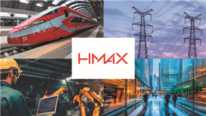
・事業ポートフォリオ改革の実行
HMAXの展開強化のためAIを活用したビジネスデザインなどを強みとするドイツのsynvert社を買収し、また、電力インフラにおけるサービス事業の強化を目的に米国のShermco社の少数持分を取得しました。さらに、日立建機㈱及びAstemo㈱の株式の一部譲渡やATM等の事業を担う日立チャネルソリューションズ㈱の資本再編を決定したことに加え、本年４月には日立グローバルライフソリューションズ㈱の家電事業の資本再編を決定するなど、Inspire 2027の達成に向け事業ポートフォリオ改革を着実に実行しました。
（２）経営成績の状況の分析
①業績の状況
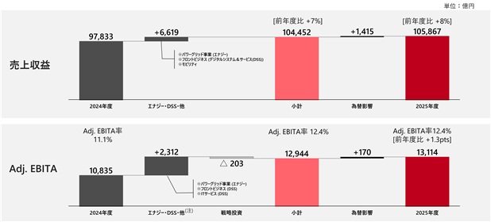
（注）米国関税影響△240億円を含みます。
売上収益は、前年度に比べて8％増加し、10兆5,867億円となりました。ビルシステム事業における新設昇降機の需要減少等に伴うコネクティブインダストリーズセグメント等の減収要因があったものの、強いパワーグリッド需要を取り込んだエナジーセクター、堅調な国内のデジタル需要を取り込んだデジタルシステム＆サービスセクター等により、増収となりました。
売上原価は、前年度に比べて6％増加し、7兆4,072億円となり、売上収益に対する比率は、前年度に比べて1ポイント減少し、70％となりました。売上総利益は、前年度に比べて13％増加し、3兆1,795億円となりました。
販売費及び一般管理費は、前年度に比べて7％増加し、1兆9,802億円となり、売上収益に対する比率は、前年度と同水準の19％となりました。
これらの結果、Adjusted EBITA（Adjusted Earnings before interest, taxes and amortizationの略であり、売上収益から、売上原価並びに販売費及び一般管理費の額を減算して算出した指標に、企業結合により認識した無形資産等の償却費を足し戻して算出した指標）は、前年度に比べて2,279億円増加し、1兆3,114億円となりました。なお、当社は、当連結会計年度の期首より、Adjusted EBITAの算出式を見直しています。前年度のAdjusted EBITAの数値は、見直し後の算出式で計算した値に置き換えています。
その他の収益は、前年度に比べて838億円増加し、1,335億円となり、その他の費用は、前年度に比べて577億円増加し、2,008億円となりました。主な内訳は、以下のとおりです。
・固定資産損益は、前年度に比べて261億円悪化し、74億円の損失となりました。
・減損損失は、デジタルシステム＆サービスセグメントにおいてファイルストレージ事業ののれんの減損損失を計上したこと等により、前年度に比べて593億円増加し、1,515億円となりました。
・事業再編等損益は、Johnson Controls-Hitachi Air Conditioning (UK) Ltd.（以下、「JCH」といいます。）の株式売却に伴う事業再編等利益を計上したこと等により、前年度に比べて1,022億円増加し、1,318億円の利益となりました。
・特別退職金は、前年度に比べて56億円増加し、161億円となりました。
金融収益（受取利息を除きます。）は、前年度に比べて528億円増加し、1,068億円となり、金融費用（支払利息を除きます。）は、前年度に比べて40億円減少し、88億円となりました。
持分法による投資損益は、前年度に比べて142億円減少し、441億円の利益となりました。
受取利息及び支払利息調整後税引前当期利益は、前年度に比べ2,964億円増加し、1兆2,740億円となりました。
受取利息は、前年度に比べて6億円増加し、327億円となり、支払利息は、前年度に比べて132億円減少し、336億円となりました。
税引前当期利益は、前年度に比べて3,103億円増加し、1兆2,731億円となりました。
法人所得税費用は、前年度に比べて1,158億円増加し、4,216億円となりました。
当期利益は、前年度に比べて1,945億円増加し、8,514億円となりました。
非支配持分に帰属する当期利益は、前年度に比べて79億円増加し、490億円となりました。
これらの結果、親会社株主に帰属する当期利益は、前年度に比べて1,866億円増加し、8,023億円となりました。
②セグメントごとの業績の状況
セグメントごとに業績の状況を概観すると次のとおりです。各セグメントの売上収益には、セグメント間の内部売上収益が含まれています。また、当連結会計年度の期首より、報告セグメントの区分を、デジタルシステム＆サービス、エナジー、モビリティ、コネクティブインダストリーズ、その他の５セグメントへ変更しており、比較する前年度の数値も新区分に組み替えています。
各表内の内数は、各セグメントの主な事業等の業績を表しており、また、売上収益については当該事業間の内部売上収益を含んでいるため、それらの合計額は、セグメント全体の業績と一致しない場合があります。
（デジタルシステム＆サービス）
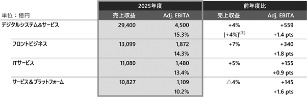
（注）括弧内の数値は為替影響を除いた対前年度増減率の概算値を表しています。
売上収益は、欧米顧客の投資抑制影響等によりサービス＆プラットフォーム事業が減収となったものの、国内のDX（デジタルトランスフォーメーション）及びモダナイゼーションを中心としたフロントビジネス事業の堅調な推移やLumada事業の拡大等により、増収となりました。
Adjusted EBITAは、売上収益の増加、プロジェクトマネジメントの強化及びコスト削減等による収益性の改善等により、増益となりました。
（エナジー）
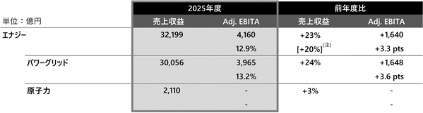
（注）括弧内の数値は為替影響を除いた対前年度増減率の概算値を表しています。
売上収益は、パワーグリッド事業における大型プロジェクト等の好調な推移、受注残の着実な売上転換及び為替影響等により、増収となりました。
Adjusted EBITAは、パワーグリッド事業における売上収益の増加、受注残の収益性改善、継続的な生産効率向上、着実なプロジェクト遂行、Lumada事業の拡大及び経営基盤刷新費用（システム統合費用等）の収束等により、増益となりました。
（モビリティ）
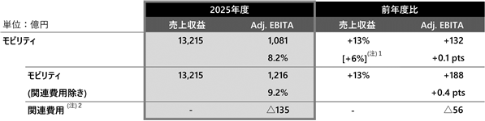
（注）１. 括弧内の数値は為替影響を除いた対前年度増減率の概算値を表しています。
２. 関連費用には、事業買収に伴うPMI（Post Merger Integration）に係る費用等が含まれています。
売上収益は、為替影響に加え、Thales社の鉄道信号関連事業の買収影響や信号システム事業を含むLumada事業の堅調な推移等により、増収となりました。
Adjusted EBITAは、Thales社の鉄道信号関連事業買収に伴うPMIに係る費用を含む関連費用等による減益要因があったものの、売上収益の増加や、信号システム事業における収益性向上等により、増益となりました。
（コネクティブインダストリーズ）
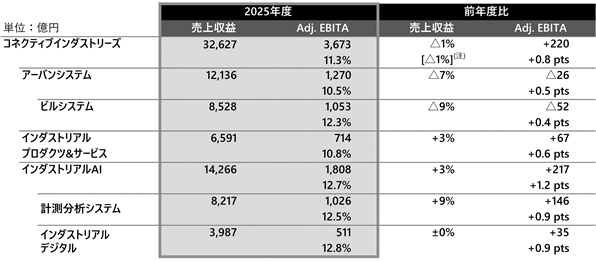
（注）括弧内の数値は為替影響を除いた対前年度増減率の概算値を表しています。
売上収益は、半導体製造装置事業が堅調に推移した計測分析システム事業や産業機械事業が堅調に推移したインダストリアルプロダクツ＆サービス事業等が増収となったものの、中国における新設昇降機の需要減少等に伴いビルシステム事業が減収となったこと等により、減収となりました。
Adjusted EBITAは、セグメント全体で減収となったものの、計測分析システム事業の売上収益の増加等により、増益となりました。
（その他）
売上収益は、前年度に比べて7％増加し、5,310億円となりました。
Adjusted EBITAは、前年度に比べて110億円増加し、229億円となりました。
③地域ごとの売上収益の状況
仕向地別に外部顧客向け売上収益の状況を概観すると次のとおりです。
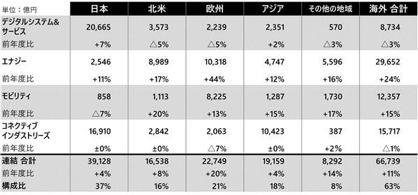
国内
国内売上収益は、増収となりました。これは主として、フロントビジネス事業やLumada事業が堅調に推移したデジタルシステム＆サービスセグメントの増収等によるものです。
海外
海外売上収益は、増収となり、売上収益全体に占める比率は、前年度に比べて2ポイント増加し63％となりました。各地域の状況は、以下のとおりです。
（北米）
増収となりました。これは主として、デジタルシステム＆サービスセグメントのサービス＆プラットフォーム事業における顧客投資抑制による減収影響等があったものの、エナジーセグメントにおけるパワーグリッド事業が増収となったこと等によるものです。
（欧州）
増収となりました。これは主として、エナジーセグメントにおいてパワーグリッド事業が増収となったこと及びモビリティセグメントにおいてThales社の鉄道信号関連事業の買収効果に伴う増収があったこと等によるものです。
（アジア）
中国及びASEAN・インド他から成るアジアは、増収となりました。これは主として、コネクティブインダストリーズセグメントにおいて中国における新設昇降機の需要減少による減収の影響等があったものの、同セグメントにおける計測分析システム事業が増収となったこと等によるものです。
（その他の地域）
増収となりました。これは主として、エナジーセグメント及びモビリティセグメントにおいて増収となったこと等によるものです。
（３）財政状態及びキャッシュ・フローの状況の分析
①流動性と資金の源泉
財務活動の基本方針
当社は、現在及び将来の事業活動のための適切な水準の流動性の維持及び機動的・効率的な資金の確保を財務活動の重要な方針としています。当社は、運転資金の効率的な管理を通じて、事業活動における資本効率の最適化を図るとともに、グループ内の資金の管理を当社や海外の金融子会社に集中させることを推進しており、グループ内の資金管理の効率改善に努めています。
当社は、経営管理指標にROICを導入し、資本効率の向上と収益性の高い事業の成長を経営として推進しています。ROICは、事業に投じた資金（投下資本）によって生み出されたリターンを評価する指標で、税引後の事業利益を投下資本で除すことで算出します。リターンを上げるためにはROICが投下資本の調達コストである加重平均資本コスト（WACC）を上回る必要があります。
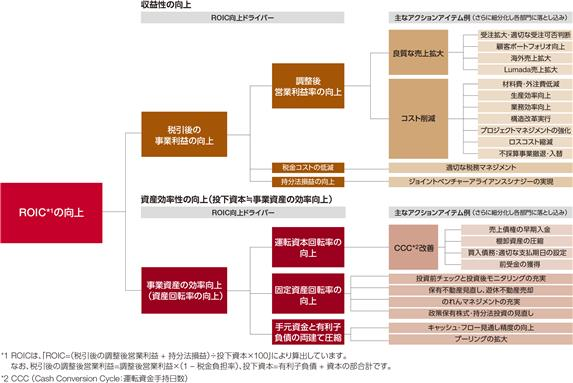
また、収益性を図る主要な指標として、Adjusted EBITA（売上収益から、売上原価並びに販売費及び一般管理費の額を減算して算出した指標である調整後営業利益に、企業結合により認識した無形資産等の償却費を足し戻して算出した指標）を用いています。
今後は、Adjusted EBITA率13％から15％及びROIC12％から13％をめざすとともに、事業買収における投資判断の基準としてもAdjusted EBITA率及びROICを用いることで、投資判断の規律を徹底し、収益力の強化と事業資産の効率向上をさらに図っていきます。
資金需要の動向
当社の主要な資金使途は、成長に向けたM&A、人財への投資、設備投資や研究開発投資、株主還元等です。コア・フリー・キャッシュ・フロー及び資産売却で得た資金を、これらの成長投資や株主還元にバランスよく配分していきます。
主なM&A等の案件については、「第５ 経理の状況 １ 連結財務諸表等 （１）連結財務諸表 連結財務諸表注記 注５．事業再編等」に、設備投資の実績及び計画については、「第３ 設備の状況」に、株主還元の方針及び実績については、「第４ 提出会社の状況 ３ 配当政策」に記載しています。
資金の源泉
当社は、営業活動によるキャッシュ・フロー並びに現金及び現金同等物を内部的な資金の主な源泉と考えており、短期投資についても、直ちに利用できる財源となりうると考えています。また、資金需要に応じて、国内及び海外の資本市場における債券の発行及び株式等の資本性証券の発行並びに金融機関からの借入により資金を調達することが可能です。設備投資やM&Aのための資金については、主として内部資金により充当することとしており、必要に応じて社債や株式等の発行により資金を調達することとしています。借入により資金を調達する場合には、D/Eレシオ、有利子負債/EBITDA倍率等の財務規律に照らし、適正な財政状態を維持する方針としています。当社は、機動的な資金調達を可能とするため、3,000億円を上限とする社債の発行登録を行っています。
当社及び一部の子会社は、資金需要に応じた効率的な資金の調達を確保するため、複数の金融機関との間でコミットメントラインを設定しています。当社においては、契約期間１年・３年で期間満了時に更新するコミットメントライン契約を締結しています。2026年３月31日現在における当社のコミットメントライン契約に係る借入未実行残高は5,050億円です。
当社は、ムーディーズ・ジャパン㈱（ムーディーズ）、S&Pグローバル・レーティング・ジャパン㈱（S&P）及び㈱格付投資情報センター（R&I）から債券格付けを取得しています。2026年３月31日現在における格付けの状況は、次のとおりです。
|
格付会社 |
長期会社格付け |
短期会社格付け |
|
ムーディーズ |
A2 |
P-1 |
|
S&P |
A |
A-1 |
|
R&I |
AA |
a-1+ |
当社は、現在の格付け水準の下で、引き続き、国内及び海外の資本市場から必要な資金調達が可能であると考えており、格付け水準の維持・向上を図っていきます。
②キャッシュ・フロー
当連結会計年度のキャッシュ・フローの状況は、以下のとおりです。
（営業活動に関するキャッシュ・フロー）
営業活動に関するキャッシュ・フローは、前年度に比べて4,958億円の資金の増加となり、1兆6,680億円の収入となりました。これは、事業再編等損益等を除く当期利益の増加や、前受金（契約負債）の獲得による収入の増加等によるものです。
（投資活動に関するキャッシュ・フロー）
投資活動に関するキャッシュ・フローは、前年度に比べて2,320億円の資金の増加となり、3,415億円の支出となりました。これは、有形固定資産の取得による支出が前年度に比べて増加したものの、前年度においてThales社の鉄道信号関連事業を買収したこと等による支出があったことに加え、当年度においてJCH株式を売却したことによる収入があったこと等によるものです。
（財務活動に関するキャッシュ・フロー）
財務活動に関するキャッシュ・フローは、前年度に比べて5,469億円の資金の減少となり、9,710億円の支出となりました。これは、自己株式の取得による支出の増加や、短期借入金及び長期借入金の純支出額（収入額と支出額の差）が増加したこと等によるものです。
フリー・キャッシュ・フロー（営業活動に関するキャッシュ・フローと投資活動に関するキャッシュ・フローを合わせたもの）は、前年度に比べて7,279億円の資金の増加となり、1兆3,265億円の収入となりました。
また、コア・フリー・キャッシュ・フロー（フリー・キャッシュ・フローから、M&Aや資産売却他に係るキャッシュ・フローを除いた経常的なキャッシュ・フロー）は、前年度に比べて3,896億円の資金の増加となり、1兆1,702億円の収入となりました。
これらの結果、当連結会計年度末の現金及び現金同等物は、前年度末に比べて4,572億円増加し、1兆3,234億円となりました。
③資産、負債及び資本
当連結会計年度末の総資産は、受注・売上の拡大に伴う運転資金等の増加により、前年度末に比べて1兆7,564億円増加し、15兆412億円となりました。当連結会計年度末の現金及び現金同等物は、前年度末に比べて4,572億円増加し、1兆3,234億円となりました。
当連結会計年度末の有利子負債（短期借入金及び償還期長期債務を含む長期債務の合計）は、前年度末に比べて1,970億円減少し、1兆90億円となりました。金融機関からの借入やコマーシャル・ペーパー等から成る短期借入金は、前年度末に比べて297億円減少し、434億円となりました。償還期長期債務は、前年度末に比べて570億円増加し、4,258億円となりました。社債及び銀行や保険会社からの借入等から成る長期債務（償還期長期債務を除きます。）は、前年度末に比べて2,243億円減少し、5,397億円となりました。
当連結会計年度末の親会社株主持分は、前年度末に比べて7,212億円増加し、6兆5,683億円となりました。この結果、当連結会計年度末の親会社株主持分比率は、前年度末の44.0％に対して、43.7％となりました。
当連結会計年度末の非支配持分は、前年度末に比べて199億円増加し、2,042億円となりました。
当連結会計年度末の資本合計は、前年度末に比べて7,411億円増加し、6兆7,726億円となり、資本合計に対する有利子負債の比率は、前年度末から0.05ポイント減少し、0.15倍となりました。
（４）生産、受注及び販売の状況
当グループの生産・販売品目は広範囲かつ多種多様であり、同種の製品であっても、その容量、構造、形式等は必ずしも一様ではなく、また、受注生産形態をとらない製品も多く、セグメントごとに生産規模及び受注規模を金額又は数量で示すことはしていません。長期にわたり収益が認識される契約を有する主なセグメントについては、未履行の履行義務残高を、「第５ 経理の状況 １ 連結財務諸表等 （１）連結財務諸表 連結財務諸表注記 注20．売上収益」に記載しています。また、販売の状況については、「（２）経営成績の状況の分析」において各セグメントの業績に関連付けて示しています。
（５）重要な会計方針及び見積り
IFRSに基づく連結財務諸表の作成においては、期末日における資産・負債の報告金額及び偶発的資産・債務の開示並びに報告期間における収益・費用の報告金額に影響するような見積り及び仮定が必要となります。いくつかの会計上の見積りは、次の二つの理由により、連結財務諸表に与える重要性及びその見積りに影響する将来の事象が現在の判断と著しく異なる可能性があり、当グループの財政状態、財政状態の変化又は経営成績に重大な影響を及ぼす可能性があります。第一は、会計上の見積りがなされる時点においては、不確実性がきわめて高い事項についての仮定が必要になるため、第二は、当連結会計年度における会計上の見積りに合理的に用いることがありえた別の見積りが存在し、又は時間の経過により会計上の見積りの変化が合理的に起こりうるためです。見積り及び仮定が必要となる重要な会計方針は、次のとおりです。
貸倒引当金
当グループは、売上債権及び契約資産並びにその他の債権に対して、測定した予想信用損失に等しい金額で貸倒引当金を計上しています。予想信用損失は、金融資産に関して契約上支払われるキャッシュ・フロー総額と、受取りが見込まれる将来キャッシュ・フロー総額との差額の割引現在価値を発生確率により加重平均して測定しています。支払遅延の存在、支払期日の延長、外部信用調査機関による否定的評価、債務超過等悪化した財政状況や経営成績の評価を含む、一つ又は複数の事象が発生している場合には、信用減損が生じた金融資産として個別的評価を行い、主に過去の貸倒実績や将来の回収可能額等に基づき予想信用損失を測定しています。信用減損が生じていない金融資産については、主に過去の貸倒実績に必要に応じて現在及び将来の経済状況等を踏まえて調整した引当率等に基づく集合的評価により予想信用損失を測定しています。予想信用損失は最善の見積りと判断により決定していますが、将来の取引先の財務状況の悪化や将来の不確実な経済条件の変動の結果によって影響を受ける可能性があります。
貸倒引当金の算定については、「第５ 経理の状況 １ 連結財務諸表等 （１）連結財務諸表 連結財務諸表注記 注３ 重要性がある会計方針の概要 （４）金融商品」に記載しています。貸倒引当金の増減内容は、「第５ 経理の状況 １ 連結財務諸表等 （１）連結財務諸表 連結財務諸表注記 注25 金融商品及び関連する開示 （２）財務上のリスク ③信用リスク」に記載しています。
長期請負契約等に係る見積り、コストの変動及び契約の解除
当グループは、インフラシステムの建設に係る請負契約をはじめ多数の長期契約を締結しており、一定の期間にわたり製品及びサービス等の支配の移転が行われる取引については、顧客に提供する当該製品及びサービス等の性質を考慮し、履行義務の充足に向けての進捗度を発生原価又はサービス提供期間に基づき測定し収益を認識しています。なお、当該進捗度を合理的に測定することができない場合は、発生したコストの範囲で収益を認識しています。長期請負契約等に基づく収益認識において、見積原価総額、見積収益総額、契約に係るリスクやその他の要因について重要な仮定を用いて見積る必要がありますが、かかる見積りは変動する可能性があります。当グループは、これらの見積りを継続的に見直し、必要と考える場合には調整を行っています。当グループは、価格が確定している契約の予測損失は、その損失が見積られた時点で費用計上していますが、かかる見積りは変動する可能性があります。また、コストの変動は、当グループのコントロールの及ばない様々な理由によって発生する可能性があります。さらに、当グループ又はその取引相手が契約を解除する可能性もあります。このような場合、当グループは、当該契約に関する当初の見積りを見直す必要が生じ、かかる見直しは、当グループの事業、財政状態及び経営成績に悪影響を及ぼす可能性があります。
企業結合
企業結合の会計処理は取得法を用いています。被取得会社の有形資産のほか、技術やブランド、顧客リストといった無形資産も公正価値にて評価を行いますが、かかる評価において、個々の事案に応じた適切な前提条件や将来予測に基づき、見積りを行います。評価は通常、独立した外部専門家が評価プロセスに関与しますが、評価における重要な見積り及び前提には固有の不確実性が含まれます。当グループは、主要な前提条件の見積りは合理的であると考えていますが、実際の結果が異なる可能性があります。
資産の減損
当グループは、保有し、かつ使用している資産の帳簿価額について、帳簿価額の回収ができなくなる可能性を示す事象又は状況の変化が生じた場合は、減損の兆候の有無を判定します。この判定において、資産の帳簿価額が減損していると判断された場合は、帳簿価額が回収可能価額を超える金額を減損損失として認識します。各資産及び資金生成単位又は資金生成単位グループごとの回収可能価額は、処分費用控除後の公正価値と使用価値のいずれか高い方で算定しています。
公正価値を算定するために用いる評価技法として、主に当該資産等の使用及び最終処分価値から期待される見積将来キャッシュ・フローに基づくインカム・アプローチ（現在価値法）又は類似する公開企業との比較や当該資産等の時価総額等、市場参加者間の秩序ある取引において成立しうる価格を合理的に見積り算定するマーケット・アプローチを用いています。使用価値は、経営者により承認された事業計画を基礎とした将来キャッシュ・フローの見積額を、加重平均資本コストをもとに算定した割引率で現在価値に割り引いて算定しており、現時点で合理的であると判断される一定の前提に基づいていますが、マーケットに係るリスク、経営環境に係るリスク等により、実際の結果が大きく異なることがありえます。また、使用価値の算定に使用する割引率については、株式市場の動向や金利の変動等により影響を受けます。将来キャッシュ・フロー及び使用価値の見積りは合理的であると考えていますが、将来キャッシュ・フローや使用価値の減少をもたらすような予測不能な事業上の環境の変化に起因する見積りの変化が、資産の評価に不利に影響する可能性があります。当グループは、公正価値及び使用価値算定上の複雑さに応じ、外部専門家を適宜利用しています。
のれんは、事業買収で獲得する市場競争力を基礎とする超過収益力の源泉であり、被取得会社の純資産と、取得の対価の差額の内、無形資産等に計上された額以外をのれんとして計上します。のれんは、IFRSに基づき、償却をせず、減損の兆候の有無にかかわらず、毎年、主に第４四半期において、その資産の属する資金生成単位又は資金生成単位グループごとに回収可能価額を見積り、減損テストを実施しています。また、当初の見積りと直近の見積りを比較するモニタリングを継続し、事業戦略の変更や市場環境等の変化により、その価値が当初の見積りを下回り、帳簿価額が回収不可能であるような兆候がある場合には、その都度、減損テストを実施しています。当該事象や状況の変化には、世界的な経済や金融市場における危機も含まれ、その資産の属する資金生成単位又は資金生成単位グループの帳簿価額が回収可能価額を超える場合には、その超過額を減損損失として認識しています。
減損及びのれんのセグメントごとの内訳は、「第５ 経理の状況 １ 連結財務諸表等 （１）連結財務諸表 連結財務諸表注記 注４ セグメント情報」に記載しています。主な内容は、「第５ 経理の状況 １ 連結財務諸表等 （１）連結財務諸表 連結財務諸表注記 注９ 有形固定資産 及び 注10 のれん及びその他の無形資産」に記載しています。
繰延税金資産
繰延税金資産は、将来の期に回収されることとなる税額であり、実現可能性を評価するにあたり、当グループは、同資産の一部又は全部が実現しない蓋然性の検討を行っています。実現可能性は確定的ではありませんが、実現可能性の評価において、当グループは、繰延税金負債の振り戻しの予定及び予測される将来の課税所得を考慮しています。将来の課税所得の見積りの基礎となる、将来の業績の見通しは、経済の動向、市場における需給動向、製品及びサービスの販売価格、原材料及び部品の調達価格、為替相場の変動、急速な技術革新等予見しえない事象により実際とは異なる結果となり、将来において修正される可能性があります。その結果、認識可能と判断された繰延税金資産の金額に不利な影響を及ぼす可能性があります。繰延税金資産の実現可能性の評価は、各納税地域の各納税単位で行われており、類似の事業を営む場合でも、製品や納税地域の違いにより異なった評価となりえます。同資産が最終的に実現するか否かは、これらの一時差異等が、将来、それぞれの納税地域における納税額の計算上、課税所得の減額あるいは税額控除が可能となる会計期間において、課税所得を計上しうるか否かによります。これらの諸要素に基づき当グループは、2026年３月31日現在で認識可能と判断された繰延税金資産が実現する蓋然性は高いと判断していますが、実際に課税所得が生じる時期及び金額は見積りと異なる可能性があります。
退職給付に係る負債
当グループは、数理計算によって算出される多額の退職給付費用を負担しています。この評価には、死亡率、脱退率、退職率、給与の変更及び割引率等の退職給付費用を見積る上で利用される様々な数理計算上の仮定が含まれています。当グループは、人員の状況、市況及び将来の金利の動向等の多くの要素を考慮に入れて、数理計算上の仮定を見積る必要があります。数理計算上の仮定の見積りは、基礎となる要素に基づき、合理的なものであると考えていますが、実際の結果と合致する保証はありません。数理計算上の仮定が実際の結果と異なった場合、その結果として実際の退職給付費用が見積費用から乖離して、当グループの財政状態及び経営成績に悪影響を及ぼす可能性があります。割引率の低下は、数理上の退職給付に係る負債の増加をもたらす可能性があります。また、当グループは、割引率等の数理計算上の仮定を変更する可能性があります。数理計算上の仮定の変更も、当グループの財政状態及び経営成績に悪影響を及ぼす可能性があります。
退職後給付の算定については、「第５ 経理の状況 １ 連結財務諸表等 （１）連結財務諸表 連結財務諸表注記 注３ 重要性がある会計方針の概要 （11）退職後給付」に記載しています。
（６）将来予想に関する記述
「第２ 事業の状況」の「１ 経営方針、経営環境及び対処すべき課題等」、「２ サステナビリティに関する考え方及び取組」、「３ 事業等のリスク」及び「４ 経営者による財政状態、経営成績及びキャッシュ・フローの状況の分析」並びに「第４ 提出会社の状況」の「５ 従業員の状況等」等は、当社又は当グループの今後の計画、見通し、戦略等の将来予想に関する記述を含んでいます。将来予想に関する記述は、当社又は当グループが当有価証券報告書提出日現在において合理的であると判断する一定の前提に基づいており、実際の業績等の結果は見通しと大きく異なることがありえます。その要因のうち、主なものは以下のとおりです。
・主要市場における経済状況及び需要の急激な変動
・為替相場変動
・資金調達環境
・株式相場変動
・原材料・部品の不足及び価格の変動
・信用供与を行った取引先の財政状態
・主要市場・事業拠点（特に日本、アジア、米国及び欧州）における政治・社会状況及び貿易規制等各種規制
・気候変動対策に関する規制強化等への対応
・情報システムへの依存及び機密情報の管理
・人財の確保
・新技術を用いた製品の開発、タイムリーな市場投入、低コスト生産を実現する当社及び子会社の能力
・地震・津波等の自然災害、気候変動、感染症の流行及びテロ・紛争等による政治的・社会的混乱
・長期請負契約等における見積り、コストの変動及び契約の解除
・価格競争の激化
・製品等の需給の変動
・製品等の需給、為替相場及び原材料価格の変動並びに原材料・部品の不足に対応する当社及び子会社の能力
・社会イノベーション事業強化に係る戦略
・企業買収、事業の合弁及び戦略的提携の実施並びにこれらに関連する費用の発生
・事業再構築のための施策の実施
・持分法適用会社への投資に係る損失
・当社、子会社又は持分法適用会社に対する訴訟その他の法的手続
・製品やサービスに関する欠陥・瑕疵等
・自社の知的財産の保護及び他社の知的財産の利用の確保
・退職給付に係る負債の算定における見積り
相互技術援助契約
|
契約会社名 |
相手方の名称 |
国名 |
契約品目 |
契約内容 |
契約期間 |
|
株式会社日立製作所 （当社） |
International Business Machines Corp. |
アメリカ |
インフォメーションハンドリングシステム |
特許実施権の交換 |
自 2008年１月１日 至 2028年１月１日 までに出願された 特許の終了日 |
|
〃 |
HP Inc. Hewlett Packard Enterprise Company |
アメリカ |
全製品・サービス |
特許実施権の交換 |
自 2010年３月31日 至 2014年12月31日 までに出願された 特許の終了日 |
|
〃 |
EMC Corporation |
アメリカ |
インフォメーションハンドリングシステム |
特許実施権の交換 |
自 2003年１月１日 至 2007年12月31日 までに出願された 特許の終了日 |
|
日立GEベルノバニュークリアエナジー株式会社 （連結子会社） |
GE Vernova Hitachi Nuclear Energy Americas LLC |
アメリカ |
原子炉システム |
特許実施権の交換 技術情報の交換 |
自 1991年10月30日 至 2036年３月31日 |
（１）研究の目的及び主要課題
当グループ(当社及び連結子会社)は、めざす社会の姿として、環境・幸福・経済成長が調和したハーモナイズドソサエティを掲げています。この実現に向けて、研究開発ではコア市場における事業領域の差別化に寄与するだけでなく、外部環境の変化の中で転換点を生み出し、成長市場や新市場の開拓を狙った技術開発を進めています。当グループ全体が持つ“強み技術”を体系化した「技術基盤」に基づきながら、製品やサービスの差別化、イノベーションの創生につなげています。
また、Lumada 3.0を体現する、AIで社会インフラを革新する次世代ソリューション群「HMAX」の拡大につながる技術開発にも取り組んでいます。この技術開発において重要な役割を担うのが、フィジカルAI統合モデル「Integrated World Infrastructure Model (以下、「IWIM」といいます。)」です。IWIMは、当社が蓄積してきた社会インフラ領域の運用・保守に関するドメインナレッジを学習することで、物理世界の現象を正確に理解・推論し、適切に応答することが可能です。これにより、設備の状態把握や保全計画の高度化といった現場課題の解決に資するフィジカルAIの開発及び事業への技術展開を加速し、社会インフラの変革に貢献していきます。
（２）研究開発体制
当グループの研究開発は、当社及び国内外のグループ各社の研究開発部門が緊密に連携し、グローバルな視点のもとで推進しています。また、大学・研究機関、業界団体、外部企業など多様なパートナーと連携し、研究開発グループ国分寺サイトの「協創の森」を基点として、共同研究及び協業を展開しています。これらの取組により、技術及び社会の転換点を先取りし、イノベーションの創出から社会実装に至るまで一体的に推進しています。さらに、コーポレートベンチャリングを活用したオープンイノベーションを通じて、社外パートナーとの技術基盤の構築及び事業創出を進めています。
コア事業の成長、成長市場の獲得及び新市場の創出に向けた持続的なイノベーションの加速を目的として、2025年４月に研究開発グループの組織再編を実施しました。国内では、OT×Digitalの創出を担う「Digital Innovation R&D」、OT×Productのイノベーションを担う「Sustainability Innovation R&D」、次の成長領域の創出を担う「Next Research」を設置し、研究開発を推進しています。海外では、北米、欧州、中国、アジア、インドに展開する研究開発拠点を通じて各地域の変化を捉え、各国・地域の事業部門と連携した事業創出及び地域特性や市場ニーズに応じた研究開発を推進し、事業成長と新たな価値創出を牽引しています。
（３）イノベーション投資
当グループのさらなる成長に向けて、グループ全体のイノベーション投資を拡大します。
コーポレートベンチャリング投資では、2025年に組成した最大規模となる400百万米ドルの第４号ファンドを含め、当社のスタートアップへの投資資金残高は累計10億米ドルに達しました。グローバルトップクラスの運用規模によりオープンイノベーションをさらに加速させ、スタートアップを活用したイノベーションエコシステム構築に貢献します。具体的には、日立の強みであるOT、IT及びプロダクトにAIを融合させたフィジカルAIや、データセンター、ヘルスケア、分散型エネルギーシステム、量子、核融合、宇宙等の先端技術や新領域を対象に、新事業創出に注力する戦略SIBビジネスユニットの活動を中心としてスタートアップとの協創を推進しています。こうした取組により創出される技術や事業機会を起点に、One Hitachiの成長事業の創出及び新たな事業機会の獲得をめざしています。
（４）研究開発費
当連結会計年度における当グループの研究開発費は、売上収益の2.7％にあたる2,903億円であり、セグメントごとの研究開発費及び研究開発費の推移は次のとおりです。
|
|
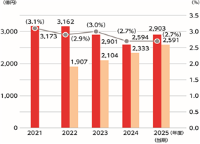 |
||||||||||||||||
|
（注）１．赤色は当グループの研究開発費の合計です。オレンジ色はそのうち、デジタルシステム＆サービス、エナジー、モビリティ及びコネクティブインダストリーズの４セグメントにおける研究開発費の合計です。 ２．（ ）内の数値は、当グループの研究開発費の売上収益合計に占める割合です。 |
（５）研究成果
当連結会計年度における研究開発活動の主要な成果は、次のとおりです。
当グループでは、社会インフラの運用・制御技術で培ったノウハウに加え、AIなどのデジタル技術、製品技術を活かしたグリーン・サステナビリティ、次の成長領域の創出に向けた先端技術の研究開発を推進しました。これらの各領域の融合的な取組を通じて、社会課題の解決、新たな価値創出、持続可能な社会や未来社会の実現に貢献しました。
① Lumada 3.0/HMAXを支える基盤技術を開発 (全社、デジタルシステム＆サービスセグメント、コネクティブインダストリーズセグメント)
社会インフラを安全かつ持続的に革新するため、フィジカルAI統合モデル「IWIM」を発表しました(2025年11月)。IWIMは、当社が蓄積してきた社会インフラ領域のナレッジ/手法とAI技術を統合することで、物理世界の現象を正確に理解・推論し、適切な応答を実現します。IWIMを活用することで、現場の動作データや作業ノウハウを自律的に継続学習（(注)１）して動作を最適化しながら作業の速度・品質を向上する、フィジカルAI技術を開発しました(2026年3月)。さらに、エッジAI(注)２技術の開発により、多様なセンサーデータ処理を一つの半導体チップに集積・省電力化し、最適化した回路で効率的な動作を実現します(2025年10月)。これらの技術を通じて、Lumada 3.0を体現するHMAXのグローバル展開に貢献し、人・AI・ロボットが共に進化する社会の実現・価値最大化をめざします。
(注)１．本研究の一部は、国立研究開発法人科学技術振興機構(以下、「JST」といいます。)のムーンショット型研究開発事業(グラント番号JPMJMS2031)の支援を受けて実施しています。
２．ネットワークの端末機器（エッジデバイス）に直接搭載したAI
|
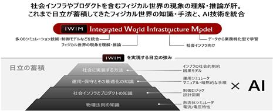 |
|
フィジカルAI統合モデル「IWIM」の概要 |
|
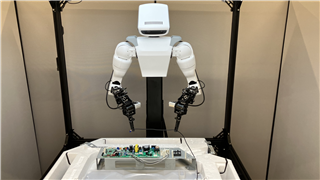 |
|
フィジカルAIロボットの動作の様子 |
② 次世代AIエージェント「Naivy」の開発とアプリケーションを拡充 (デジタルシステム＆サービスセグメント、エナジーセグメント、コネクティブインダストリーズセグメント)
次世代AIエージェント「Frontline Coordinator – Naivy (以下、「Naivy」といいます(注)１。）」を開発しました（2025年7月）。Naivyは、メタバース空間と現場情報を統合し、必要な情報を人やロボットに提供するAIエージェントであり、様々なアプリケーションに活用することでフロントラインワーカーの作業効率やウェルビーイングの向上に貢献します。当社は、㈱日立プラントサービスと共同で行った現場での検証において、施設管理タスクにおける非熟練者の業務遂行能力を３割程度向上できることを確認しました。「現場安全高度化ソリューション」の提供において、具体的なユースケースとして、Naivyを活用した「リスク危険予知支援システム(注)２」を㈱日立プラントコンストラクションと共同開発するなど、現場の安全性向上にも貢献しました（2025年10月）。さらに、㈱日立ソリューションズが提供する「設備管理向けナレッジ活用アプリケーション」においてもNaivyを活用し（2026年3月）、One Hitachiでアプリケーションの拡充を推進することで、現場のデジタルトランスフォーメーション(DX)と安全性向上に貢献しました。
(注)１．NavigatorとAIを組み合わせた造語で、人とAIとロボットが統合的に協働するための調整役の意味。商標登録済み。
２．リスク危険予知：現場作業などに潜む不安全な状態や行動、心理状態を事前に明らかにすることで、労働災害のリスクを軽減し、事故防止につなげること。また、リスクアセスメントの要素を含む、より広範なリスク評価を行うこと。
③ 半導体デバイスの生産効率改善に寄与する高感度欠陥検査技術を開発 (コネクティブインダストリーズセグメント)
半導体製造プロセスにおける10nm(ナノメートル。1mmの100万分の1。)以下の微小欠陥を高感度に検出する技術を開発しました。デバイス回路のレイアウトを自動認識して検出感度を調整する技術と、誤検出を識別する技術を組み合わせることで、欠陥ではない製造プロセス上のばらつきの誤判定(過検出)を低減します。半導体デバイス評価用サンプルでの試験では、過検出を90％以上抑制できることを確認しました。これにより、検査工数の削減とデバイスの安定供給を支援します。開発技術をマルチビーム式の走査型電子顕微鏡へ搭載し、高速・高感度検査を実現します。さらに、検査時に得られる電気・材料特性データを活用することで、製造プロセスのデジタルツイン（注）化を推進し、生産効率改善により深く寄与することをめざします。
（注）現実世界から収集したデータをもとに、その現実世界をコンピューター上の仮想空間に再現する技術。ここでは、製造プロセスの最適化や品質管理に活用することを指します。
④ エネルギー領域でのSociety 5.0実現と、循環経済の実現を加速するエコシステム構築の強化 (全社)
日立東大ラボでは、提言書「Society 5.0を支えるエネルギーシステムの実現に向けて」を第６版まで発刊し、カーボンニュートラル実現に向けた具体的な道筋を示してきました。2025年４月に発刊した第７版では、第６版からの変化点と動向を網羅的に解析し、優先課題とその対策をまとめました。2026年１月に開催した第８回産学協創フォーラムでは、提言の振り返りやエネルギー改革を議論するとともに、「エネルギーシステムの公共性と競争性」、「地域のトランジションの加速」をテーマにディスカッションし、持続可能な社会実現に向けた次のアクションの議論を深めました。これまでの取組が評価され、内閣府等が主催する「第８回日本オープンイノベーション大賞」日本経済団体連合会会長賞を受賞しています(2026年２月)。
また、2022年10月に国立研究開発法人産業技術総合研究所(以下、「産総研」といいます。)内に「日立-産総研サーキュラーエコノミー連携研究ラボ」を設立して以来、「循環経済社会のグランドデザインの策定」をはじめとした３つのテーマで研究を推進してきました。サーキュラーエコノミーに関する様々な創意工夫が生み出す費用対効果を研究報告書等で公開するなど、定義や算定方法、個社及びバリューネットワークへの適用方法、実務上の留意点を整理しました。2026年２月の第３回オープンフォーラムでは、「ありたき将来」の実現に向けたロードマップや要件に加え、標準化や重要なステークホルダーとの連携、経済性と環境性の両立する施策のあり方について外部有識者と議論を深めました。これらのサーキュラーエコノミーに関する提言活動は、2025年グッドデザイン賞を受賞しています(2025年10月)。
|
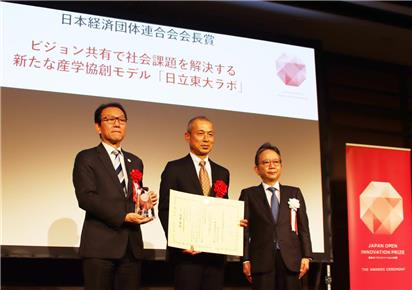 |
|
「第８回日本オープンイノベーション大賞」表彰式の様子 |
|
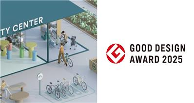 |
|
サーキュラーエコノミー提言活動における「2025年グッドデザイン賞」の受賞 |
⑤ シリコン量子コンピュータの実用化に向けた研究開発を加速 (全社)
当社は、日立ケンブリッジラボでの長年の基礎研究を経て、2020年からはJSTのムーンショット型研究開発事業(グラント番号JPMJMS2065)も活用し、大規模化に優位なシリコン量子コンピュータの研究開発を推進しています。2025年10月には、この分野で世界的な研究業績のある理化学研究所及びベルギーを拠点とする世界的な研究イノベーション・ハブであるimecと、グローバルなエコシステム構築に向けた基本合意書を締結しました。各国の研究拠点や専門人材を活用した研究開発ネットワークを構築し、新たなスピン量子ビット（(注)１）制御技術の研究開発を加速しています。
2026年３月には、JSTのムーンショット型研究開発事業の第２期(2026～2030年度)の研究開発プロジェクト(グラント番号JPMJMS256H)に参画することを発表しました。2027年度までに開発者や研究者が参加できる量子プラットフォーム（(注)２）の構築とクラウド公開（(注)３）を推進するとともに、産学官連携や国際標準化、社会や産業の課題解決に向けた活用を広げていきます。
(注)１．量子ビット:量子コンピュータで利用される情報の最小単位
２．量子コンピュータを活用したアプリケーション開発や研究が可能な共通基盤
３．インターネット経由で研究者や開発者が単一電子からなる量子ビットを実際に操作できるサービス
|
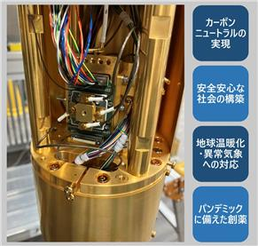 |
|
シリコン量子コンピュータ及び適用イメージ |
⑥ 宇宙からの災害監視・インフラ管理の精度を高める「構造化電波」技術の原理検証に成功 (全社)
人工衛星による災害監視や環境モニタリングなどを想定した「構造化電波(注)」技術の原理検証に成功しました。本技術は、物体の形状や動き、材質など複数の特徴(多変数データ)を同時に取得できる独自の電波制御及び解析技術です。今回、音波を用いた実験を通じて、渦状の波面を持つ構造化電波の生成・制御、検出、解析の有効性を確認しました。天候や昼夜の影響を受けずに、複数の情報取得が可能となり、迅速な意思決定や異常兆候の早期発見に役立ちます。今後は、パートナー企業や大学・研究機関と連携し、多様な分野での社会実装を推進することで、安全・安心で持続可能な社会の実現に貢献していきます。
（注）ここでは、偏波状態や位相、周波数といった自由度を制御して作り上げた電波のことを指します。今回の検証では、渦状の波面の重ね合わせを使用。
|
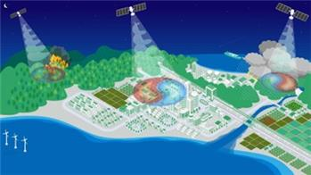 |
|
構造化電波を利用した地球観測のイメージ図 |